In hierdie hoofstuk gaan jy leer hoe om te sê presies hoe lank iets is. Met telgetalle alleen kan ons nie altyd sê presies hoe lank iets is nie. Dit is hoekom breuke uitgevind is.
Jy gaan ook leer om berekeninge met breuke te doen.
6.1 Meet akkuraat met dele van ’n eenheid 155
6.2 Verskillende dele in verskillende kleure 160
6.3 Kombineer breuke 162
6.4 Tiendes en honderdstes (persentasies) 164
6.5 Duisendstes, honderdstes en tiendes 167
6.6 Breuk van ’n breuk 169
6.7 Vermenigvuldig met breuke 172
6.8 Orden en vergelyk breuke 176
6 Breuke
6.1 Meet akkuraat met dele van ’n eenheid
’N VREEMDE MEETEENHEID
In hierdie aktiwiteit gaan jy lengtes meet met ’n eenheid wat ’n grysstok genoem word. Die grys meetstok hier onder is presies 1 grysstok lank. Jy gaan hierdie stok gebruik om verskillende voorwerpe te meet.

Die rooi staaf hier onder is presies 2 grysstokke lank.

Soos jy kan sien, is die geel staaf hier onder langer as 1 grysstok maar korter as
2 grysstokke.

Om te probeer om die geel staaf akkuraat te meet, gaan ons een grysstok in ses gelyke dele verdeel:

Elkeen van hierdie dele is dus een sesde van ’n grysstok.
1. Dink jy ons kan sê die geel staaf is een en vier sesdes van ’n grysstok lank?

2. Beskryf die lengte van die blou staaf in woorde.
One and five sixths of a greystick
Hierdie grysstok is in sewe gelyke dele verdeel:
Elke deel is een sewende van ’n grysstok.
3. Wat kan elk van die kleiner dele van die grysstokke hier onder genoem word? Skryf jou antwoorde in woorde.
(a)
(b)
(c)
(d)
(e)
(f)
(g)
(h)
(i)
(j)
(k)
(l)
(m)
(n)
Hoe het jy geweet wat om die klein dele te noem?
Tel die klein dele en gebruik die
using ordinal number names to describe/name the parts
Skryf al jou antwoorde op die volgende vrae in woorde.
4. (a) Hoe lank is die boonste geel staaf?
een en sewe twaalfdes van ’n grysstok

(b) Hoe lank is die onderste geel staaf?
een en veertien vier-en-twintigstes
5. (a) Hoe lank is die blou staaf onder aan die vorige bladsy?
een en tien twaalfdes van ’n grysstok / een en vyf sesdes van ’n grysstok
(b) Hoe lank is die rooi staaf onder aan die vorige bladsy?
een en drie sesdes / een en twaalf vier-en-twintigstes van ’n grysstok
6. (a) Hoeveel twaalfdes van ’n grysstok is dieselfde lengte as een sesde van ’n grysstok?
twee twaalfdes
(b) Hoeveel vier-en-twintigstes is dieselfde lengte as een sesde van ’n grysstok?
vier vier-en-twintigstes
(c) Hoeveel vier-en-twintigstes is dieselfde lengte as sewe twaalfdes van ’n grysstok?
veertien vier-en-twintigstes
7. (a) Hoe lank is die boonste geel staaf hier onder?
one and eight tenths of a greystick

(b) Hoe lank is die onderste geel staaf hier bo?
one and four fifths of a greystick
(c) Hoe lank is die blou staaf?
een en sewe tiendes van ’n grysstok / een en
fourteen twentieths of a greystick
(d) Hoe lank is die rooi staaf?
een en drie vyfdes van ’n grysstok / een en twaalf
twentieths of a greystick
8. (a) Hoeveel vyfdes van ’n grysstok is dieselfde
lengte as 12 twintigstes van ’n grysstok?
three fifths
(b) Hoeveel vierdes (of kwarte) van ’n grysstok is dieselfde lengte as
15 twintigstes van ’n grysstok?
three fourths (or three quarters)
BESKRYF DIESELFDE LENGTE OP VERSKILLENDE MANIERE
Twee breuke kan dieselfde lengte beskryf.
Jy kan hier sien dat drie sesdes van ’n grysstok
dieselfde is as vier agtstes van ’n grysstok.
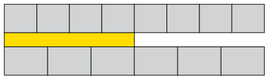
|
|
Wanneer twee breuke dieselfde deel beskryf, sê ons hulle is ekwivalent.
|
1. (a) Wat kan elke klein deeltjie op hierdie grysstok genoem word?

(b) Hoeveel agtiendes is een sesde van die grysstok?
(c) Hoeveel agtiendes is een derde van die grysstok?
(d) Hoeveel agtiendes is vyf sesdes van die grysstok?
2. (a) Skryf (in woorde) die name van vier verskillende breuke neer wat almal
ekwivalent is aan drie kwarte. Jy mag na die geel grysstokke op bladsy 154 kyk
om jou te help.
Sample answer, based on the abovementioned greysticks:
nine twelfths; twelve sixteenths; fifteen twentieths; eighteen twenty-fourths
(b) Watter ekwivalente breuke vir twee derdes kan jy op die geel grysstokke sien?
eight twelfths and sixteen twenty-fourths
3. Die inligting dat 2 derdes ekwivalent is aan 4 sesdes, aan 6 negendes en aan
8 twaalfdes is in die tweede ry van die tabel hier onder geskryf. Voltooi die ander rye van die tabel op dieselfde manier. Die diagramme op bladsy 154 kan jou dalk help.
|
derdes
|
vierdes
|
vyfdes
|
sesdes
|
agtstes
|
negendes
|
tiendes
|
twaalfdes
|
twintigstes
|
|
1
|
|
|
|
|
|
|
|
|
|
2
|
−
|
−
|
4
|
−
|
6
|
−
|
8
|
−
|
|
−
|
3
|
|
|
|
|
|
|
|
|
−
|
−
|
1
|
|
|
|
|
|
|
|
−
|
−
|
2
|
|
|
|
|
|
|
|
−
|
−
|
3
|
|
|
|
|
|
|
|
−
|
−
|
4
|
|
|
|
|
|
|
4. Voltooi hierdie tabel op dieselfde manier as die tabel in vraag 3.
|
vyfdes
|
tiendes
|
vyftiendes
|
twintigstes
|
vyf-en-twintigstes
|
vyftigstes
|
honderdstes
|
|
1
|
|
|
|
|
|
|
|
2
|
|
|
|
|
|
|
|
3
|
|
|
|
|
|
|
|
4
|
|
|
|
|
|
|
|
5
|
|
|
|
|
|
|
|
6
|
|
|
|
|
|
|
|
7
|
|
|
|
|
|
|
5. Gebruik die grysstokke hier onder om te wys dat 3 vyfdes en 9 vyftiendes ekwivalent is. Teken met die vrye hand; jy hoef nie akkuraat te meet en teken nie.

6. Voltooi hierdie tabelle op dieselfde manier as die tabel in vraag 4.
|
agtstes
|
sestiendes
|
24stes
|
|
24stes
|
sesdes
|
twaalfdes
|
18des
|
|
1
|
|
|
|
|
1
|
|
|
|
2
|
|
|
|
|
2
|
|
|
|
3
|
|
|
|
|
3
|
|
|
|
4
|
|
|
|
|
4
|
|
|
|
5
|
|
|
|
|
5
|
|
|
|
6
|
|
|
|
|
6
|
|
|
|
7
|
|
|
|
|
7
|
|
|
|
8
|
|
|
|
|
8
|
|
|
|
9
|
|
|
|
|
9
|
|
|
7. (a) Hoeveel is vyf twaalfdes plus drie twaalfdes?
(b) Hoeveel is vyf twaalfdes plus een kwart?
(c) Hoeveel is vyf twaalfdes plus drie kwarte?
(d) Hoeveel is een derde plus een kwart? Dit sal jou help as jy met die ekwivalente
breuke in twaalfdes werk.
seven twelfths (1 third = 4 twelfths; 1 quarter = 3 twelfths)
6.2 Verskillende dele in verskillende kleure
Hierdie strook is in agt gelyke dele verdeel.
Vyf agtstes van die strook is rooi.
1. Watter deel van die strook hier bo is blou?
2. Watter deel van hierdie strook is geel?
three fifths
3. Watter deel van die strook is rooi?
two fifths
4. Watter deel van hierdie strook is blou ingekleur en watter deel is rooi ingekleur?

Two tenths is blue and eight tenths is red.
5. (a) Watter deel van hierdie strook is blou, watter deel is rooi en watter deel is wit?

Four twentieths is blue; ten twentieths is red; five twentieths is white.
(b) Druk jou antwoord anders uit deur ekwivalente breuke te gebruik.
Sample answer: one fifth is blue; one half is red; one quarter is white.
6. Twee negendes van ’n strook, wat nie hier gewys word nie, is blou en drie negendes is groen. Die res van die strook is rooi. Watter deel van die strook is rooi?
four ninths
7. Watter deel van hierdie strook is geel, watter deel is blou en watter deel is rooi?

Yellow: three twenty-fourths; blue: fifteen twenty-fourths; red: six twenty-fourths
Die getal dele in ’n breuk word die teller van die breuk genoem. Byvoorbeeld, die teller
in 5 sesdes is 5.
Die soort dele in ’n breuk word die noemer genoem. Dit is die naam van die dele waarna verwys word en word bepaal deur die grootte van die deel. Byvoorbeeld, sesdes is die noemer in 5 sesdes.
Om te tel beteken om vas te stel hoeveel daar van iets is. Die teller sê dus hoeveel dele daar is.
Om te benoem beteken om ’n naam aan iets te gee. Die noemer sê dus watter soort of watter grootte deel dit is.
|
|
5/6 is ’n kort manier om 5 sesdes te skryf.
Ons kan ook skryf.
Al skryf ons 5/6 of , sê ons steeds “5 sesdes”.
/6 en is kort maniere om sesdes te skryf.
Die teller (die getal dele) word bokant die lyn
van die breuk geskryf:
Die noemer (die soort dele) word aangedui deur ’n
getal wat onder die lyn geskryf word:
|
8. Vermenigvuldig beide die teller en die noemer met 2 om ’n nuwe breuk te vorm.
Is die nuwe breuk ekwivalent aan  ? Jy kan dit op die diagram hier onder
? Jy kan dit op die diagram hier onder
kontroleer.
× =
Yes, it is.
(b) Vermenigvuldig beide die teller en die noemer met 3 om ’n nuwe breuk te vorm. Is die nuwe breuk ekwivalent aan  ?
?
× = Yes, it is equivalent to .
(c) Vermenigvuldig beide die teller en die noemer met 4 om ’n nuwe breuk te vorm.
Is die nuwe breuk ekwivalent aan  ?
?
× = Yes, it is equivalent to .
(d) Vermenigvuldig beide die teller en die noemer met 6 om ’n nuwe breuk te vorm.
Is die nuwe breuk ekwivalent aan  ?
?
× = Yes, it is equivalent to .
6.3 Kombineer breuke
GROTER EN KLEINER DELE
Gertie is gevra om hierdie probleem op te los:
’n Span padbouers het km pad in een week gebou en  km pad in die daaropvolgende week. Wat is die totale lengte pad wat hulle in die twee weke
km pad in die daaropvolgende week. Wat is die totale lengte pad wat hulle in die twee weke
gebou het?
Sy het soos volg geredeneer om die probleem op te los:
 is agt twaalfdes en
is agt twaalfdes en  is tien twaalfdes, so altesaam is dit agtien twaalfdes.
is tien twaalfdes, so altesaam is dit agtien twaalfdes.
Ek kan  of “18 twaalfdes” skryf.
of “18 twaalfdes” skryf.
Ek kan ook sê twaalf twaalfdes van ’n kilometer is 1 kilometer, so 18 twaalfdes is
1 kilometer en 6 twaalfdes van ’n kilometer.
Ek kan dit as 1 skryf. Dit is dieselfde as 1 km.
Gertie moes ook die volgende vraag beantwoord: Hoeveel is 4 + 2
+ 2 ?
?
Sy het soos volg geredeneer om dit te beantwoord:
4 is 4 heles en 5 negendes, en 2 is 2 heles en 7 negendes.
is 2 heles en 7 negendes.
So altesaam is dit 6 heles en 12 negendes. Maar 12 negendes is 9 negendes (1 hele)
en 3 negendes, so ek kan sê dit is 7 heles en 3 negendes.
Ek kan dit as 7 skryf.
skryf.
1. Sou Gertie verkeerd wees as sy gesê het haar antwoord is 7?
No, 7 is equivalent to 7. ( is expressed in its simplest form.)
2. Senthereng het 4 bottels kookolie. Hy gee 1
bottels kookolie. Hy gee 1 bottels vir sy vriend Willem.
bottels vir sy vriend Willem.
Hoeveel olie het Senthereng oor?
3 or 3
3. Margaret het 5 bottels kookolie. Sy gee 3
bottels kookolie. Sy gee 3 bottels vir haar vriendin Naledi.
bottels vir haar vriendin Naledi.
Hoeveel olie het Margaret oor?
5 − 3 = 4 − 3 = 1 or 1
4. Bereken elk van die volgende:
(a) 4 − 3
− 3 (b) 3
(b) 3 +
+ 
= 
= 4
(c) 3 + 1 (d) 4
(d) 4 − 2
− 2
(e) 1 −
−  (f) 3 − 1
(f) 3 − 1
= 3 − 1
− 1
= 
(g)  +
+  +
+  +
+  +
+  (h) 6
(h) 6 + 2
+ 2 −
− 
= 
= 3
= 8
(i)  +
+  +
+  +
+  +
+  +
+  +
+  +
+  +
+  +
+  +
+  +
+  +
+ 
=  = 8
= 8
(j) 2 + 2 + 2
+ 2 + 2 + 2
+ 2 + 2
+ 2 + 2
+ 2 + 2
+ 2 + 2
+ 2
= 16 = 20
= 20
(k) (4 + 1) − 2
+ 1) − 2
= 5 − 2
− 2 = 5
= 5 − 2
− 2 = 3
= 3
(l) (2 + 3
+ 3 ) − (1
) − (1 + 3
+ 3 )
)
= ( −
−  ) − ( +
) − ( +  ) = −
) = − = −5
= −5 or −5
or −5
5. Neo se verslag het vyf hoofstukke gehad. Die eerste hoofstuk was ’n  bladsy, die tweede hoofstuk was 2
bladsy, die tweede hoofstuk was 2 bladsye, die derde hoofstuk was 3
bladsye, die derde hoofstuk was 3 bladsye, die vierde hoofstuk was 3 bladsye en die vyfde hoofstuk was 1
bladsye, die vierde hoofstuk was 3 bladsye en die vyfde hoofstuk was 1 bladsye lank. Hoeveel bladsye was Neo se verslag in totaal?
bladsye lank. Hoeveel bladsye was Neo se verslag in totaal?
 + 2
+ 2 + 3
+ 3 + 3 + 1
+ 3 + 1 = 9
= 9 = 11
= 11 pages or 11
pages or 11 pages
pages
6.4 Tiendes en honderdstes (persentasies)
1. (a) 100 kinders kry elkeen 3 koekies. Hoeveel koekies is dit altesaam?
100 × 3 = 300 biscuits
(b) 500 lekkers word gelykop tussen 100 kinders verdeel. Hoeveel lekkers kry elke
kind?
500 ÷ 100 = 5 sweets
2. Die prent hier onder stel ’n strook licorice voor. Die baie klein stukkies wat jy sien, kan maklik op die dun lyntjies afgebreek word.

Hoeveel baie klein stukkies word in die prent gewys?
3. Gatsha het ’n spazawinkel. Hy verkoop stroke licorice soos dié hier bo vir R2 elk.
(a) Hoeveel kos een baie klein stukkie licorice as jy dit by Gatsha koop?
R2 ÷ 100 = 2c
(b) Jonathan wil een vyfde van ’n strook licorice koop. Hoeveel moet hy betaal?
R2 ÷ 5 = 40c
(c) Batseba eet 25 baie klein stukkies. Watter deel van ’n hele strook licorice is dit?
or
Elke klein stukkie van die strook hier bo is een honderdste van die hele strook.
4. (a) Waarom kan elke klein stukkie een honderdste van die hele strook genoem word?
Because the strip is divided into 100 pieces of equal size
(b) Hoeveel honderdstes is dieselfde as een tiende van die strook?
10 hundredths
Gatsha verkoop dikwels stukke van licorice-stroke aan klante. Hy gebruik ’n “kwarte-merker” en ’n “vyfdes-merker” om die stukke presies te meet voordat hy dit afsny. Sy
twee merkers word hier onder gewys, langs ’n hele strook licorice.

5. (a) Hoeveel honderdstes is dieselfde as twee vyfdes van die hele strook?
40 honderdstes
(b) Hoeveel tiendes is dieselfde as  van die hele strook?
van die hele strook?
4 tiendes
(c) Hoeveel honderdstes is dieselfde as  van die hele strook?
van die hele strook?
75 honderdstes
(d) Freddie het van ’n strook gekoop. Hoeveel vyfdes van ’n strook is dit?
3 vyfdes
(e) Jamey het ’n stukkie vir R1,60 gekoop. Watter gedeelte van ’n strook het sy gekoop?
80 honderdstes
6. Gatsha, die eienaar van die spazawinkel, het stukke geel licorice aan ses kinders verkoop. Hulle stukke word hier onder gewys.
Hoeveel (watter deel van ’n hele strook) het elkeen van hulle gekry?

Gabieba: 27 honderdstes Miriam: 32 honderdstes Sannie: 28 honderdstes
Enoch: 20 honderdstes Mpati: 30 honderdstes Mpho: 33 honderdstes
7. Die geel licorice wat hier bo gewys word, kos R2,40 (240 sent) vir ’n strook. Hoeveel moet elkeen van die kinders betaal? Rond die bedrae tot die naaste sent af.
Gabieba: 65c Miriam: 77c Sannie: 67c
Enoch: 48c Mpati: 72c Mpho: 79c
8. (a) Hoeveel is  van 300 sent? (b) Hoeveel is
van 300 sent? (b) Hoeveel is  van 300 sent?
van 300 sent?
(c) Hoeveel is  van 300 sent? (d) Hoeveel is
van 300 sent? (d) Hoeveel is  van 300 sent?
van 300 sent?
(e) Hoeveel is  van 300 sent? (f) Hoeveel is van 300 sent?
van 300 sent? (f) Hoeveel is van 300 sent?
 of 300c = 60c so
of 300c = 60c so  = 120c or R1,20
= 120c or R1,20
9. Verduidelik waarom jou antwoorde vir vraag 8(e) en 8(f) dieselfde is.
Because and are equivalent fractions
|
|
’n Ander woord vir honderdste is persent.
In plaas daarvan om te sê
Miriam kry 32 honderdstes van ’n strook licorice,
kan ons sê
Miriam kry 32 persent van ’n strook licorice.
Die simbool vir persent is %.
|
10. Hoeveel is 80% van elk van die volgende?
(a) R500 (b) R480 (c) R850 (d) R2 400
R400 R384 R680 R1 920
11. Hoeveel is 8% van elk van die bedrae in vraag 10?
(a) R40 (b) R38,40 (c) R68 (d) R192
12. Hoeveel is 15% van elk van die bedrae in vraag 10?
(a) R75 (b) R72 (c) R127,50 (d) R360
13. Boukoste van huise het met 20% gestyg. Wat sal dit nou kos om ’n huis te bou waarvan die boukoste voorheen R110 000 was?
R110 000 + (20% of R110 000) = R110 000 + R22 000 = R132 000
14. Die waarde van ’n motor daal met 30% na een jaar. As die prys van ’n nuwe motor R125 000 is, wat is die waarde van die motor na een jaar?
R125 000 − (30% of 125 000) = R125 000 − R37 500 = R87 500
15. Ondersoek watter noemers van breuke maklik na magte van 10 herlei kan word.
Only numbers that are multiples of 2 and/or 5
6.5 Duisendstes, honderdstes en tiendes
VELE GELYKE DELE
1. Vyftig kilogram suiker moet gelykop tussen 1 000 vlugtelinge in ’n vlugtelingkamp verdeel word. Hoeveel suiker moet elke vlugteling kry? Hou in gedagte dat 1 kg gelyk is aan 1 000 g. Jy kan jou antwoord in gram gee.
50 kg = 50 000 g 50 000 g ÷ 1 000 = 50 g for each refugee
2. Hoeveel is elk van die volgende?
(a) een tiende van R6 000 (b) een honderdste van R6 000
(c) een duisendste van R6 000 (d) tien honderdstes van R6 000
(e) 100 duisendstes van R6 000 (f) sewe honderdstes van R6 000
(g) 70 duisendstes van R6 000 (h) sewe duisendstes van R6 000
3. Bereken.
(a)  +
+  (b) 3
(b) 3 + 2
+ 2
=  +
+ 
(c)  +
+  (d)
(d)  +
+ 
(e)  +
+  (f)
(f)  +
+ 
=  +
+ 
= 
= 
4. Bereken.
(a)  +
+  +
+  (b)
(b)  +
+  +
+
(c)  +
+  + (d) 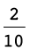 +
+ (d) 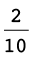 +  +
+ 
=  or
or 
5. Ondersoek of elk van die stellings hier onder waar is of nie. Gee redes vir jou
finale besluite.
(a)  + + =
+ + =  +
+  +
+ 
 +
+  +
+  =
= 
 +
+  +
+  =
= 
True, because LHS equals RHS.
(b)  +
+  +
+  =
=  +
+  +
+ 
LHS is the same as in the previous question but RHS is  .
.
Not true.
(c)  +
+  +
+  =
=  +
+  +
+ 
True, because LHS is again  and the sum on the RHS forms the thousandths
and the sum on the RHS forms the thousandths
digits one by one.
(d)  =
=  +
+  +
+ 
True.
Both sides can be expressed as  +
+  +
+  .
.
6.6 Breuk van ’n breuk
VORM DELE VAN DELE
1. (a) Hoeveel is een vyfde van R60?
(b) Hoeveel is drie vyfdes van R60?
2. Hoeveel is 7 tiendes van R80?
(As jy wil, kan jy eers uitwerk hoeveel 1 tiende van R80 is.)
1 tenth of R80 = R8, so 7 tenths of R80 = 7 × R8 = R56
3. Die geldeenheid in die VSA is die Amerikaanse dollar, in Brittanje is dit die pond, in Wes-Europa die euro, en in Botswana die pula.
(a) Hoeveel is 2 vyfdes van 20 pula?
(b) Hoeveel is 2 vyfdes van 20 euro?
(c) Hoeveel is 2 vyfdes van 12 pula?
4,8 pula (4 pula en 80 thebe)
4. Waarom was dit so maklik om 2 vyfdes van 20 te bereken, maar moeilik om 2 vyfdes
van 12 te bereken?
Because 5 divides into 20 without a remainder
Daar is ’n manier wat dit maklik maak om iets soos 3 vyfdes van R4 te bereken. Jy verander net die rande na sente!
5. Bereken die volgende. Jy mag die rande na sente verander om dit makliker te maak.
(a) 3 agtstes van R2,40 (b) 7 twaalfdes van R6
(c) 2 vyfdes van R21 (d) 5 sesdes van R3
6. Jy gaan nou ’n paar berekeninge oor geheime voorwerpe doen.
(a) Hoeveel is 3 tiendes van 40 geheime voorwerpe?
12 secret objects
(b) Hoeveel is 3 agtstes van 40 geheime voorwerpe?
15 secret objects
Die geheime voorwerpe in vraag 6 is vyftigstes van ’n rand.
7. (a) Hoeveel vyftigstes is 3 tiendes van 40 vyftigstes?
12
(b) Hoeveel vyftigstes is 5 agtstes van 40 vyftigstes?
25
8. (a) Hoeveel twintigstes van ’n kilogram is dieselfde as  van ’n kilogram?
van ’n kilogram?
15 twintigstes
(b) Hoeveel is een vyfde van 15 rand?
(c) Hoeveel is een vyfde van 15 twintigstes van ’n kilogram?
(d) So, hoeveel is een vyfde van  van ’n kilogram?
van ’n kilogram?
9. (a) Hoeveel is  van 24 veertigstes van ’n geheime voorwerp?
van 24 veertigstes van ’n geheime voorwerp?
(b) Hoeveel is  van 24 veertigstes van die geheime voorwerp?
van 24 veertigstes van die geheime voorwerp?
10. Stem jy saam dat die antwoorde op die vorige vraag 2 veertigstes en 14 veertigstes is?
As jy nie saamstem nie, verduidelik waarom jy verskil.
Yes
11. (a) Hoeveel is  van 80?
van 80?
(b) Hoeveel is  van 80?
van 80?
(c) Hoeveel is van 80?
(d) Hoeveel is  van 80?
van 80?
(e) Verduidelik waarom  van 80 dieselfde is as
van 80 dieselfde is as  van 80.
van 80.
Because and are equivalent fractions
12. Kyk weer na jou antwoorde vir vraag 9(b) en vraag 11(e). Hoeveel is 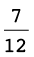 van  ?
?
Verduidelik jou antwoord.
It is because = [from question 11(e)].
So of is the same as of , which was calculated in question 9(b) as .
Die geheime voorwerp in vraag 9 was ’n koevert met R160 daarin.
Na die werk wat jy in vraag 9, 10 en 11 gedoen het, weet jy
- • dat en maar net twee verskillende maniere is om dieselfde ding te beskryf en
- • dat van dieselfde is as van .
Dit is maklik om  van
van  te bereken: 1 twaalfde van 24 is 2, so 7 twaalfdes van 24
te bereken: 1 twaalfde van 24 is 2, so 7 twaalfdes van 24
is 14, so 7 twaalfdes van 24 veertigstes is 14 veertigstes.
 van
van  kan op dieselfde manier bereken word. Maar 1 agtste van
kan op dieselfde manier bereken word. Maar 1 agtste van  is ’n effense
is ’n effense
probleem, so dit sal beter wees om ’n ekwivalent van  te gebruik. Die ekwivalent
te gebruik. Die ekwivalent
moet só gekies word dat dit maklik is om 1 agtste daarvan te bereken. Daarom sal dit
gaaf wees as die teller 8 kan wees.  is ekwivalent aan
is ekwivalent aan  , so in plaas daarvan om
, so in plaas daarvan om  van
van  te bereken, kan ons
te bereken, kan ons  van
van  bereken.
bereken.
13. (a) Bereken  van 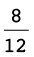.
van 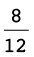.
= of is of is
(b) So, hoeveel is  van
van  ?
?
= so the answer is the same as in question 13(a), that is .
14. Vervang elke keer die tweede breuk met ’n gepaste ekwivalent en bereken dan.
(a) Hoeveel is  van
van  ?
?
= of =
(b) Hoeveel is  van
van  ?
?
= of =
(c) Hoeveel is  van
van  ?
?
= of =
(d) Hoeveel is  van ?
van ?
= of =
6.7 Vermenigvuldig met breuke
DELE VAN REGHOEKE, EN DELE VAN DELE
1. (a) Verdeel die reghoek aan die linkerkant in agtstes deur vertikale lyne te trek.
Kleur die linkerkantse 3 agtstes van die reghoek liggies in.
(b) Verdeel die reghoek aan die regterkant in vyfdes deur horisontale lyne te trek.
Kleur die boonste 2 vyfdes van die reghoek liggies in.
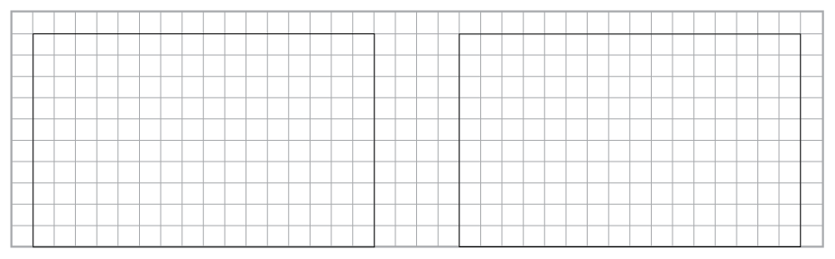
2. (a) Kleur 4 sewendes van die reghoek aan die linkerkant in.
(b) Kleur 16 agt-en-twintigstes van die reghoek aan die regterkant in.

3. (a) Watter deel van elke groot reghoek hier onder is geel ingekleur?
(b) Watter deel van die geel deel in die regterkantse reghoek is gespikkeld?

(c) In hoeveel vierkante is die hele reghoek aan die regterkant verdeel?
(d) Watter deel van die hele reghoek aan die regterkant is geel en gespikkeld?
15 fortieths
4. Teken diagramme op die rooster om jou te help om die volgende te bereken:
(a)  van
van  (b)
(b)  van
van 
= 
= 

Hier is iets wat jy met die breuke  en
en  kan doen:
kan doen:
Vermenigvuldig die twee tellers en maak dit die teller van ’n nuwe breuk.
Vermenigvuldig ook die twee noemers en maak dit die noemer van ’n nuwe breuk.
=
5. Vergelyk die metode hier bo met dit wat jy in vraag 14(a) van afdeling 6.6 en in
vraag 4(a) bo-aan hierdie bladsy gedoen het. Wat val jou op oor  van
van  en
en  ?
?
The answers are the same, so multiplying the numerators with each other and
the denominators with each other seems to be a way of finding the answer to of .
6. (a) Alan het 5 hopies van 8 appels elk. Hoeveel appels is dit in totaal?
5 × 8 = 40 apples
(b) Sean het 10 hopies van 6 kwart appels elk. Hoeveel appels is dit in totaal?
10 × = = 15 apples
7. Gebruik die diagramme hier onder om uit te werk hoeveel elk van die volgende is:
(a)  ×
×  (b)
(b)  ×
×
= 
= 

8. (a) Doen die berekeninge  vir
vir  en en vergelyk die
en en vergelyk die
antwoord met jou antwoord by vraag 7(a).
= The answers are the same.
(b) Doen dieselfde vir  en
en  .
.
= The answers are the same.
9. Doen die berekeninge  vir
vir
(a)  en
en  (b)
(b)  en
en 
= 
= 
10. Gebruik die diagramme hier onder om te kontroleer of die formule
die korrekte antwoorde vir  ×
×  en
en  ×
×  lewer.
lewer.
Yes, it does.

11. Bereken elk van die volgende:
(a)  van
van  van R60 (b)
van R60 (b)  van
van  van R63 (c)
van R63 (c)  van
van  van R45
van R45
=  × R60 = R10
× R60 = R10
=  × R63 = R4
× R63 = R4
=  × R45 = R24
× R45 = R24
12. (a) John oefen gewoonlik elke dag ’n driekwartier lank sokker. Vandag het hy egter
net die helfte van sy gewone tyd geoefen. Hoe lank het hy vandag geoefen?
ute
(b) ’n Sakkie grondbone weeg  van ’n kg. Wat weeg ’n
van ’n kg. Wat weeg ’n  sakkie?
sakkie?
(c) Bereken die massa van 7 pakkies suiker as 1 pakkie ’n massa van
pakkies suiker as 1 pakkie ’n massa van  kg het.
kg het.
7 ×
=
=

6.8 Orden en vergelyk breuke
1. Rangskik die volgende van die kleinste tot die grootste:
(a) ;  ;
;  ;
;  ;
;  (b) ; ;
(b) ; ;  ; 73%;
; 73%;
=  ;
;
=  ;
;
=  ;
;
2. Rangskik die volgende van die grootste tot die kleinste:
(a) ;  ;
;  ;
;  ; (b) ;
; (b) ;  ;
;  ; ;
; ; 
=  ;
;
= om 1 te maak; rangskik noemers 
=  ;
;
=  ;
;
3. Gebruik die simbole = , > of < om die volgende waar te maak:
(a)
(b) 

1. Herskryf elk van die volgende in breuknotasie en doen dan die berekening.
Gee jou antwoord in breuknotasie en in woorde.
(a) 3 twintigstes + 5 twintigstes (b) 5 twaalfdes + 11 twaalfdes
(c) 3 halwes + 5 kwarte (d) 3 vyfdes + 3 tiendes
Two wholes and three quarters
2. Voltooi die ekwivalente breuke.
(a) =
(b)  =
=
(c) =
(d) =
(e)  =
=
(f)  =
=
3. Herskryf elke keer die breuke in woorde en doen dan die berekening. Gee jou
antwoord in woorde en in breuknotasie.
(a)  + (b)
+ (b)  +
+ 
3 tenths plus 7 thirtieths
= 9 thirtieths + 7 thirtieths
= 24 sixtieths + 35 sixtieths
= 16 thirtieths = 
= 59 sixtieths = 
(c)  +
+  (d)
(d)  −
− 
1 hundredth plus 7 tenths
= 1 hundredth + 70 hundredths
= 15 twenty-fourths − 8 twenty-fourths
= 71 hundredths = 
= 7 twenty-fourths = 
(e) 2 + 5
+ 5
2 wholes and 3 tenths plus 5 wholes and 9 tenths
= 7 wholes and 12 tenths
= 8 wholes and 2 tenths = 8
4. Joe verdien R5 000 per maand. Sy salaris verhoog met 12%. Wat is sy nuwe salaris?
× 5 000 = = 600 R5 000 + R600 = R5 600 per month
5. Ahmed het R7 500 per maand verdien. Aan die einde van ’n sekere maand het
sy werkgewer sy salaris met 10% verhoog. Ongelukkig moes hy Ahmed se salaris ’n
maand later weer met 10% verlaag. Wat was Ahmed se salaris toe gewees?
Increased by 10%: R7 500 + R750 = R8 250 per month
Decreased by 10%: R8 250 − R825 = R7 425 per month
6. Bereken elk van die volgende en gee die antwoord in die eenvoudigste vorm.
(a) −  (b) 3
(b) 3 − 1
− 1
(c) 5 − 2
− 2 (d)
(d)  +
+
= 5 − 2 = 3
− 2 = 3
7. Evalueer.
(a)  × 9 (b) ×
× 9 (b) ×  (c)
(c)  × 15 (d)
× 15 (d)  ×
× 
8. Bereken.
(a) 2 × 2 (b) 8
(b) 8 × 3
× 3
(c) ( +
+  ) × (d)
) × (d)  ×
×  ×
× 
=  =
= 
(e)  +
+  × (f)
× (f)  −
−  ×
× 

In hierdie hoofstuk gaan jy meer leer oor desimale notasie en hoe dit met gewone breuke en persentasies verband hou. Jy gaan ook leer hoe om desimale getalle te orden en
vergelyk, en hoe om berekeninge met desimale getalle te doen.
7.1 Ander simbole vir tiendes en honderdstes 181
7.2 Persentasies en desimale getalle 183
7.3 Desimale afmetings 186
7.4 Nog desimale begrippe 188
7.5 Orden en vergelyk desimale getalle 190
7.6 Afronding 192
7.7 Optel en aftrek met desimale getalle 193
7.8 Vermenigvuldiging en desimale getalle 195
7.9 Deling en desimale getalle 199
7 Die desimale notasie vir breuke
7.1 Ander simbole vir tiendes en honderdstes
WEER TIENDES EN HONDERDSTES …
1. (a) Watter deel van die reghoek hier onder is geel ingekleur?
10 hundredths or or 1 tenth or

(b) Watter deel van die reghoek is rooi? Watter deel is blou? Watter deel is groen en
watter deel is nie ingekleur nie?
Red: Blue: / Green: Not coloured:
|
|
0,1 is ’n ander manier om  te skryf en te skryf en
0,01 is ’n ander manier om  te skryf. te skryf.
0,1 en  is verskillende notasies vir dieselfde getal. is verskillende notasies vir dieselfde getal.
word (gewone) breuknotasie genoem
en 0,1 word desimale notasie genoem.
|
2. Skryf die antwoorde vir 1(a) en (b) in desimale notasie.
Yellow: 0,1 Red: 0,01 Blue: 0,3 Green: 0,02 Not coloured: 0,57
3. 3 tiendes en 7 honderdstes van ’n reghoek is rooi ingekleur, en 2 tiendes en
6 honderdstes van die reghoek is bruin ingekleur. Watter deel van die reghoek (hoeveel tiendes en hoeveel honderdstes) is nie ingekleur nie? Skryf jou antwoord
in breuknotasie en in desimale notasie.
3 tenths () and 7 hundredths () is not coloured. That is or 0,37.
4. Maandag het Steve 3 tiendes en 7 honderdstes van ’n strook licorice geëet. Dinsdag
het Steve 2 tiendes en 5 honderdstes van die strook geëet. Hoeveel licorice het hy altesaam op Maandag en Dinsdag geëet? Skryf jou antwoord in breuknotasie en in desimale notasie.
0,62
5. Lebogang se antwoord vir vraag 4 is 5 tiendes en 12 honderdstes. Susan se antwoord
is 6 tiendes en 2 honderdstes. Wie is reg, of is hulle albei verkeerd?
They are both right.
|
|
Dieselfde hoeveelheid kan op verskillende maniere uitgedruk word in tiendes en honderdstes.
Byvoorbeeld, 3 tiendes en 17 honderdstes kan
uitgedruk word as 2 tiendes en 27 honderdstes of
4 tiendes en 7 honderdstes.
Mense regoor die wêreld het ooreengekom om die getal honderdstes in sulke stellings onder 10 te hou. Dit beteken die normale manier om die hoeveelheid hier bo uit te druk is 4 tiendes en 7 honderdstes.
In desimale notasie geskryf, is 4 tiendes en 7 honderdstes 0,47. Dit word gelees as nul komma vier sewe en NIE nul komma sewe-en-veertig nie.
|
6. Wat is elk van die volgende getalle in desimale notasie?
(a) 3 (b) 4
(b) 4 (c) (d)
(c) (d) 
… EN DUISENDSTES
|
|
0,001 is ’n ander manier om te skryf.
|
1. Wat is die desimale notasie vir elk van die volgende?
(a)  (b)
(b)  (c)
(c)  (d)
(d) 
2. Skryf die volgende getalle in desimale notasie:
(a) 2 +  + + (b) 12 +
+ + (b) 12 +  +
+ 
(c) 2 +  (d) 67
(d) 67
(e) 34 (f) 654
(f) 654
7.2 Persentasies en desimale getalle
HONDERDSTES, PERSENTASIES EN DESIMALE
1. Die reghoek hier onder is in klein deeltjies verdeel.

(a) Hoeveel van hierdie klein deeltjies is daar in die reghoek? En in een tiende van
die reghoek?
100 small parts in the rectangle; 10 small parts in one tenth of the rectangle
(b) Watter deel van die reghoek is blou? Watter deel is groen? Watter deel is rooi?
Blue: / Green: / Red:
|
|
In plaas van 6 honderdstes, kan jy sê 6 persent. Dit beteken dieselfde.
10 persent van die reghoek hier bo is geel.
|
2. Gebruik die woord “persent” om te sê watter deel van die reghoek is groen.
Watter deel is rooi?
2 per cent is green; 1 per cent is red
3. Watter persentasie van die reghoek is blou? Watter persentasie is wit?
30 persent is blou; 57 persent is wit
|
|
Die simbool % word vir “persent” gebruik. In plaas daarvan om “17 persent” te skryf, kan jy 17% skryf.
Persent beteken honderdstes. Die simbool % lyk ’n bietjie soos die simbool  . .
|
Ons sê nie: “Hoeveel persent van die reghoek is groen?” nie.
Ons sê: “Watter persentasie van die reghoek is groen?”
4. (a) Hoeveel is 1% van R400? (Met ander woorde: Hoeveel is  of 0,01 van R400?)
of 0,01 van R400?)
R4
(b) Hoeveel is 37% van R400?
R148
(c) Hoeveel is 37% van R700?
R259
5. (a) 25 appels word gelykop tussen 100 mense verdeel. Hoeveel appels kry elkeen?
Skryf jou antwoord as ’n gewone breuk en as ’n desimale getal.
or 0,25
(b) Hoeveel is 1% (een honderdste) van 25?
or or 0,25
(c) Hoeveel is 8% van 25?
2
(d) Hoeveel is 8% van 50? En hoeveel is 0,08 van 50?
4; 4
|
|
0,37 en 37% en  is verskillende simbole vir is verskillende simbole vir
dieselfde ding: 37 honderdstes.
|
6. Druk elk van die volgende op drie maniere uit:
- • in desimale notasie
- • in persentasienotasie
- • indien moontlik, in gewone breuknotasie, deur honderdstes te gebruik
(a) 3 tiendes (b) 7 honderdstes
0,3 30% 
0,07 7% 
(c) 37 honderdstes (d) 7 tiendes
0,37 37% 
0,7 70% 
(e) 3 kwarte (f) 7 agtstes
0,75 75% 
0,875 87,5% as hundredths, not possible
7. (a) Hoeveel is 3 tiendes van R200 en 7 honderdstes van R200 altesaam?
R60 + R14 = R74
(b) Hoeveel is van R200?
R74
(c) Hoeveel is 0,37 van R200?
R74
(d) En hoeveel is 37% van R200?
Also R74
8. Druk elk van die volgende op drie maniere uit:
- • in desimale notasie
- • in persentasienotasie
- • in gewone breuknotasie, deur honderdstes te gebruik
(a) 20 honderdstes (b) 50 honderdstes
0,2 20% 
0,5 50% 
(c) 25 honderdstes (d) 75 honderdstes
0,25 25% 
0,75 75% 
9. (a) Jan eet ’n kwart van ’n waatlemoen. Watter persentasie van die waatlemoen is dit?
25%
(b) Sibu drink 75% van die melk in ’n bottel. Skryf 75% in gewone breuknotasie.
or
(c) Jeminah gebruik 0,75 (7 tiendes en 5 honderdstes) van die verf in ’n blik. Watter
persentasie van die verf gebruik sy?
75%
10. Die vloer van ’n groot vertrek word hier regs
gewys. Watter deel van die vloer is met elk van
die vier kleure bedek? Druk jou antwoord op
vier maniere uit:
(a) in gewone breuknotasie, met honderdstes
(b) in desimale notasie
(c) in persentasienotasie
(d) indien moontlik, in gewone breuknotasie,
as tiendes en honderdstes (byvoorbeeld  +
+  ).
).
|
|
(a)
|
(b)
|
(c)
|
(d)
|
|
wit
|
|
|
|
|
|
rooi
|
|
|
|
|
|
geel
|
|
|
|
|
|
swart
|
|
|
|
|
7.3 Desimale afmetings
MEET OP ’N GETALLELYN
1. Lees elkeen van die lengtes by die gemerkte punte (A tot D) op die getallelyne. Gee jou antwoorde so akkuraat as moontlik in desimale notasie.
(a)

0,2 0,7 1,6 1,85
(b)

0,2 0,7 1,6 1,85
(c)
6,9 7,2 8,4 8,75
(d)

3,09 3,14 3,19 3,265
(e)

2,461 2,463 2,466 2,4685
(f)

0,4499 0,4502 0,4505 0,4509
(g)

10,4 11,2 12,4 13,4
2. Dui die volgende getalle aan op die getallelyn:
(a) 0,6 (b) 1,2 (c) 1,85 (d) 2,3
(e) 2,65 (f) 3,05 (g) 0,08

3. Dui die volgende getalle aan op die getallelyn:
(a) 3,06 (b) 3,08 (c) 3,015
(d) 3,047 (e) 3,005

7.4 Nog desimale begrippe
DESIMALE SPRONGE
Skryf die volgende tien getalle in die getallerye en wys jou getallerye, sover moontlik, op die getallelyne.
1. (a) 0,2; 0,4; 0,6;
0,8; 1; 1,2; 1,4; 1,6; 1,8; 2; 2,2; 2,4; 2,6
(b)

(c) Hoeveel 0,2’s is daar in 1?
(d) Skryf 0,2 as ’n gewone breuk.
2. (a) 0,3; 0,6; 0,9;
1,2; 1,5; 1,8; 2,1; 2,4; 2,7; 3; 3,3; 3,6; 3,9
(b)

(c) Hoeveel 0,3’s is daar in 3?
(d) Skryf 0,3 as ’n gewone breuk.
3. (a) 0,25; 0,5;
0,75; 1; 1,25; 1,5; 1,75; 2; 2,25; 2,5; 2,75; 3
(b)
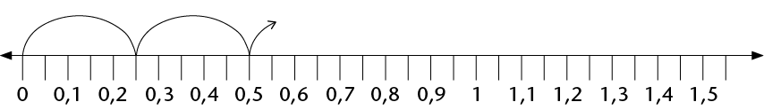
(c) Hoeveel 0,25’s is daar in 1?
(d) Skryf 0,25 as ’n gewone breuk.
|
|
’n Sakrekenaar kan geprogrammeer word om dieselfde bewerking oor en oor te doen.
Byvoorbeeld, druk 0,1
(moenie CLEAR of enige ander bewerking druk nie). Druk die
knoppie
herhaaldelik en kyk wat gebeur.
Die sakrekenaar tel in 0,1’s.
|
4. Jy kan jou antwoorde vir vrae 1 tot 3 met ’n sakrekenaar kontroleer. Programmeer die sakrekenaar om jou te help.
5. Skryf die volgende vyf getalle in die getallery:
(a) 9,3; 9,2; 9,1;
(b) 0,15; 0,14; 0,13; 0,12;
0,11; 0,1; 0,09; 0,08; 0,07
6. Programmeer jou sakrekenaar en kontroleer jou antwoorde daarmee.
PLEKWAARDE
1. Skryf elk van die volgende as een getal:
(a) 2 + 0,5 + 0,07 (b) 2 + 0,5 + 0,007
(c) 2 + 0,05 + 0,007 (d) 5 + 0,4 + 0,03 + 0,001
(e) 5 + 0,04 + 0,003 + 0,1 (f) 5 + 0,004 + 0,3 + 0,01
Ons kan 3,784 in uitgebreide notasie skryf as 3,784 = 3 + 0,7 + 0,08 + 0,004.
Ons kan ook die dele soos volg benoem:
- • die 3 stel die ene voor
- • die 7 stel die tiendes voor
- • die 8 stel die honderdstes voor
- • die 4 stel die duisendstes voor
|
|
Ons sê: die waarde van die 7 is 7 tiendes maar die plekwaarde van die 7 is tiendes, want enige syfer in daardie plek sal die getal tiendes voorstel.
Byvoorbeeld, in 2,536 is die waarde van die 3 dus 0,03 en sy plekwaarde is honderdstes, want die waarde van die plek waar dit staan is honderdstes.
|
2. Skryf nou die waarde (in desimale notasie) en die plekwaarde van elk van die onderstreepte syfers neer.
(a) 2,345 (b) 4,678 (c) 1,953
(d) 34,856 (e) 564,34 (f) 0,987
7.5 Orden en vergelyk desimale getalle
VAN GROOTSTE NA KLEINSTE EN KLEINSTE NA GROOTSTE
1. Orden die volgende getalle van grootste na kleinste. Verduidelik jou metode.
0,8 0,05 0,5 0,15 0,465 0,55 0,75 0,4 0,62
0,8 0,75 0,62 0,55 0,5 0,465 0,4 0,15 0,05
Learners’ methods may differ. Sample explanation: I added zeros at the end of the
numbers so that each number had three digits after the comma. That made it easier
for me to compare the numbers.
2. Hier onder is die uitslae van ’n paar items in die 2012 Olimpiese Spele in Londen. Rangskik die uitslae van eerste tot laaste plek. Gebruik die laaste kolom daarvoor.
(a) Vroue: Verspring – Eindronde
|
|
|
|
|
|
Anna Nazarova
|
RUS
|
6,77 m
|
|
|
Brittney Reese
|
VSA
|
7,12 m
|
|
|
Elena Sokolova
|
RUS
|
7,07 m
|
|
|
Ineta Radevica
|
LAT
|
6,88 m
|
|
|
Janay DeLoach
|
VSA
|
6,89 m
|
3de
|
|
Lyudmila Kolchanova
|
RUS
|
6,76 m
|
|
(b) Vroue: 400 m-hekkies – Eindronde
|
|
|
|
|
|
Georganne Moline
|
VSA
|
53,92 s
|
|
|
Kaliese Spencer
|
JAM
|
53,66 s
|
4de
|
|
Lashinda Demus
|
VSA
|
52,77 s
|
|
|
Natalya Antyukh
|
RUS
|
52,70 s
|
|
|
T’erea Brown
|
VSA
|
55,07 s
|
|
|
Zuzana Hejnová
|
CZE
|
53,38 s
|
|
(c) Mans: 110 m-hekkies – Eindronde
|
|
|
|
|
|
Aries Merritt
|
VSA
|
12,92 s
|
|
|
Hansle Parchment
|
JAM
|
13,12 s
|
|
|
Jason Richardson
|
VSA
|
13,04 s
|
|
|
Lawrence Clarke
|
GBR
|
13,39 s
|
|
|
Orlando Ortega
|
CUB
|
13,43 s
|
|
|
Ryan Brathwaite
|
BAR
|
13,40 s
|
|
(d) Mans: Spiesgooi – Eindronde
|
|
|
|
|
|
Andreas Thorkildsen
|
NOR
|
82,63 m
|
|
|
Antti Ruuskanen
|
FIN
|
84,12 m
|
|
|
Keshorn Walcott
|
TRI
|
84,58 m
|
|
|
Oleksandr Pyatnytsya
|
UKR
|
84,51 m
|
|
|
Tero Pitkämäki
|
FIN
|
82,80 m
|
|
|
Vítezslav Veselý
|
CZE
|
83,34 m
|
|
3. Gee ’n getal wat tussen die twee gegewe getalle voorkom. (Dit beteken jy kan enige
getal gee wat enige plek tussen die twee getalle lê.)
(a) 3,5 en 3,7 (b) 3,9 en 3,11 (c) 3,1 en 3,2
E.g. 3,6 or 3,55 or 3,679
E.g. 3,15 or 3,11 or 3,195
4. Hoeveel getalle is daar tussen 3,1 en 3,2?
Unlimited
5. Vul <, > of = in.
(a) 0,4
0,52 (b) 0,4
0,32
(c) 2,61
2,7 (d) 2,4
2,40
(e) 2,34
2,567 (f) 2,34
2,251
7.6 Afronding
Net soos telgetalle tot die naaste 10, 100 of 1 000 afgerond kan word, kan desimale getalle tot die naaste telgetal of tot een, twee, drie, ens. syfers na die komma afgerond word.
’n Getal word afgerond tot ’n getal waarvan die waarde die naaste is aan sy eie waarde voor afronding. So word 13,24 afgerond tot een desimale plek 13,2 en 13,26 afgerond tot een desimale plek 13,3. ’n Getal waarvan die laaste syfer ’n 5 is, is ewe ver van die ander twee getalle waartoe dit afgerond kan word. Sulke getalle word tot die grootste getal afgerond. Byvoorbeeld: 13,15 afgerond tot een desimale plek word 13,2.
SÊ DIT NAASTENBY MAAR NIE PRESIES NIE
1. Rond elk van die volgende getalle af tot die naaste telgetal:
7,6 18,3 204,5 1,89 0,9 34,7 11,5 0,65
8 18 205 2 1 35 12 1
2. Rond elk van die volgende getalle af tot een desimale plek:
7,68 18,93 21,47 0,643 0,938 1,44 3,81 299,996
7,7 18,9 21,5 0,6 0,9 1,4 3,8
3. Rond elk van die volgende getalle af tot twee desimale plekke:
3,432 54,117 4,809 3,762 4,258 10,222 9,365
3,43 54,12 4,81 3,76 4,26 10,22 9,37
ROND AF OM JOU TE HELP BEREKEN
1. John en drie van sy broers verkoop ’n ou fiets vir R44,65. Hoe kan die broers die geld regverdig verdeel?
R44,65 ÷ 4 = 11,1625 ≈ R11,16
Three brothers will get R11,16 and one brother will get R11,17.
2. ’n Man koop 3,75 m hout teen R11,99 per meter. Wat kos die hout hom?
3,75 × 11,99 = 44,9625 ≈ R44,96
3. Skat die antwoorde van elk van die volgende deur die getalle af te rond:
(a) 89,3 × 3,8 (b) 227,3 + 71,8 − 28,6
7.7 Optel en aftrek met desimale getalle
HOOFREKENE
1. Voltooi die getalleketting.
|
34,123
|
|
+ 20
|
|
54,123
|
|
|
|
454,123
|
|
|
|
454,023
|
|
|
|
|
|
|
|
|
|
|
|
|
|
|
|
|
|
|
|
|
|
|
|
|
|
|
|
|
|
|
|
|
|
|
|
|
|
|
|
|
|
|
|
422,011
|
|
|
|
452,011
|
|
|
|
452,021
|
|
|
|
452,023
|
|
|
|
|
|
|
|
|
|
|
|
|
|
|
|
|
|
|
|
|
|
|
|
|
|
|
|
|
|
|
|
|
|
|
|
|
|
|
|
|
|
|
|
222,011
|
|
|
|
222,211
|
|
|
|
222,231
|
|
|
|
222,232
|
|
|
|
|
|
|
|
|
|
|
|
|
|
|
|
|
|
|
|
|
|
|
|
|
|
|
|
|
|
|
|
|
|
|
|
|
|
|
|
|
|
|
|
222,489
|
|
|
|
222,482
|
|
|
|
222,422
|
|
|
|
222,222
|
|
|
Wanneer jy desimale getalle optel of aftrek, kan jy hulle na gewone breuke verander om die berekening makliker te maak.
Byvoorbeeld:
0,4 + 0,5
= + 
=
= 0,9
|
2. Bereken elk van die volgende:
(a) 0,7 + 0,2 (b) 0,7 + 0,4 (c) 1,3 + 0,8
(d) 1,35 + 0,8 (e) 0,25 + 0,7 (f) 0,25 + 0,07
(g) 3 − 0,1 (h) 3 − 0,01 (i) 2,4 − 0,5
PROBLEME UIT DIE WERKLIKE LEWE
1. Die eienaar van ’n internetkafee kyk aan die einde van die dag na haar bankstaat. Die volgende bedrae is in haar rekening inbetaal: R281,45; R39,81; R104,54 en R9,80. Hoeveel geld is daardie dag in haar rekening inbetaal?
R435,60
2. Aan die begin van ’n reis wys die odometer in ’n motor: 21589,4. Aan die einde van die reis wys die odometer: 21763,7. Watter afstand is afgelê?
174,3 km
3. By ’n atletiekbyeenkoms hardloop ’n atleet die 100 m-wedloop in 12,8 sekondes.
Die aankondiger sê dat die atleet die vorige rekord met 0,4 sekondes verbeter het.
Wat was die vorige rekord?
13,2 seconds
4. In ’n branderrykompetisie gee vyf beoordelaars vir elke deelnemer ’n punt uit 10.
Die hoogste en die laagste punte word geïgnoreer en die ander drie punte word bymekaargetel. Werk elke deelnemer se finale puntetelling uit en plaas die deelnemers in volgorde van eerste tot laaste.
A: 7,5 8 7 8,5 7,7 B: 8,5 8,5 9,1 8,9 8,7
C: 7,9 8,1 8,1 7,8 7,8 D: 8,9 8,7 9 9,3 9,1
Contestant A: 7,5 + 8 + 7,7 = 23,2 Contestant B: 8,5 + 8,9 + 8,7 = 26,1
Contestant C: 7,9 + 8,1 + 7,8 = 23,8 Contestant D: 8,9 + 9 + 9,1 = 27
D: 27 (1st); B: 26,1 (2nd); C: 23,8 (3rd); A: 23,2 (4th)
5. ’n Pyp word akkuraat gemeet. AC = 14,80 mm en
AB = 13,97 mm.
Hoe dik is die pyp (BC)?
14,80 mm −13,97 mm
= 0,83 mm
6. Mevrou Mdlankomo koop drie pakkies maalvleis.
Die pakkies weeg 0,356 kg, 1,201 kg en 0,978 kg onderskeidelik.
Wat weeg hulle altesaam?
2,535 kg
7.8 Vermenigvuldiging en desimale getalle
DIE MAG VAN TIEN
1. (a) Voltooi die vermenigvuldigingstabel.
|
|
|
|
|
|
|
|
|
|
|
6 000
|
|
60
|
|
|
0,06
|
|
|
|
|
640
|
|
|
|
|
|
|
|
|
|
|
|
0,05
|
|
|
|
|
4 780
|
|
47,8
|
|
|
|
|
|
|
41 200
|
|
|
|
|
|
|
(b) Is dit korrek om te sê “vermenigvuldiging maak groter”? Wanneer maak
vermenigvuldiging groter?
No, it is not correct; it is true only if you multiply with whole numbers.
(c) Formuleer reëls vir vermenigvuldiging met 10; 100; 1 000; 0,1; 0,01 en 0,001.
Kan jy die reëls verduidelik?
Sample answer: × 10: move the comma down one place; × 100: move the
comma down two places; × 1 000: move the comma down three places;
× 0,1: move the comma up one place; × 0,01: move the comma up two places;
× 0,001: move the comma up three places
(d) Gebruik nou jou reëls om elk van die volgende te bereken:
0,5 × 10 0,3 × 100 0,42 × 10 0,675 × 100
5 30 4,2 67,5
2. (a) Voltooi die delingstabel.
|
|
|
|
|
|
|
|
|
|
|
|
|
|
6
|
0,6
|
0,06
|
|
|
|
|
|
64
|
6,4
|
|
|
|
|
|
|
|
|
|
|
0,005
|
|
|
|
|
|
47,8
|
|
|
|
|
|
|
|
4 120
|
|
|
|
|
|
(b) Is dit korrek om te sê “deling maak kleiner”? Wanneer maak deling kleiner?
No, it is not correct; it is true only if you divide with a whole number.
(c) Formuleer reëls vir deling met 10; 100; 1 000; 0,1; 0,01 en 0,001. Kan jy die reëls
verduidelik?
Sample answer: ÷ 10: move the comma up one place; ÷ 100: move the comma
up two places; ÷ 1 000: move the comma up three places; ÷ 0,1: move the
comma down one place; ÷ 0,01: move the comma down two places;
÷ 0,001: move the comma down three places
(d) Gebruik nou jou reëls om elk van die volgende te bereken:
0,5 ÷ 10 0,3 ÷ 100 0,42 ÷ 10
0,05 0,003 0,042
3. Voltooi die volgende:
(a) Vermenigvuldiging met 0,1 is dieselfde as deling deur
(b) Deling deur 0,1 is dieselfde as vermenigvuldiging met
Bespreek dit nou met ’n maat of verduidelik vir hom of haar waarom dit so is.
4. Vul die ontbrekende getalle in:
|
1,23456
|
|
× 10
|
|
12,3456
|
|
|
|
123,456
|
|
|
|
12 345,6
|
|
|
|
|
|
|
|
|
|
|
|
|
|
|
|
|
|
|
|
|
|
|
|
|
|
|
|
|
|
|
|
|
|
|
|
|
|
|
|
|
|
|
|
1 234,56
|
|
|
|
12 345,6
|
|
|
|
123 456
|
|
|
|
1 234 560
|
|
|
|
|
|
|
|
|
|
|
|
|
|
|
|
|
|
|
|
|
|
|
|
|
|
|
|
|
|
|
|
|
|
|
|
|
|
|
|
|
|
|
|
123,456
|
|
|
|
1,23456
|
|
|
|
0,123456
|
|
|
|
123 456
|

Wat beteken vermenigvuldiging van ’n desimale getal met ’n telgetal?
Wat beteken iets soos 4 × 0,5?
Wat beteken iets soos 0,5 × 4?
4 × 0,5 beteken 4 groepe van  , wat
, wat  +
+  + +
+ +  is, wat 2 is.
is, wat 2 is.
0,5 × 4 beteken  van 4, wat 2 is.
van 4, wat 2 is.
Hier is ’n voorbeeld uit die werklike lewe:
6 × 0,42 kg = 6 × 
= (6 × 42) ÷ 100
= 252 ÷ 100
= 2,52 kg
Wat eintlik gebeur is dat ons 6 × 0,42 tot die produk van twee telgetalle herlei, die berekening doen en dan weer die antwoord terug na desimale getalle herlei (÷ 100).
VERMENIGVULDIGING VAN DESIMALE MET TELGETALLE
1. Bereken elk van die volgende. Gebruik breuknotasie om jou te help.
(a) 0,3 × 7 (b) 0,21 × 91 (c) 8 × 0,4
= 
= 
2. Skat eers die antwoorde vir elk van die volgende en bereken dan:
(a) 0,4 × 7 (b) 0,55 × 7
(c) 12 × 0,12 (d) 0,601 × 2
3. Maak ’n reël vir vermenigvuldiging met desimale. Verduidelik jou reël vir ’n maat.
Learners’ answers will differ.
Sample answer: Take away the comma, multiply and put the comma back.

Wat beteken vermenigvuldiging van ’n desimaal met ’n desimaal?
Byvoorbeeld, wat beteken 0,32 × 0,87?
As jy 0,32 m lint koop en elke meter kos R0,87, kan jy dit skryf as 0,32 × 0,87.
0,32 × 0,87 = × [Skryf as gewone breuke]
= [Vermenigvuldiging van twee breuke]
=  [Die produk van die telgetalle 32 × 87]
[Die produk van die telgetalle 32 × 87]
= 0,2784 [Herlei terug na ’n desimaal deur die produk deur 10 000 te deel]
Die produk van twee desimale word dus herlei na die produk van telgetalle en dan weer terugherlei tot ’n desimaal.
Die produk van twee desimale getalle en die produk van twee telgetalle met dieselfde syfers verskil bloot ten opsigte van die plekwaardes van die produkte, m.a.w. die posisie van die desimale komma. Dit kan ook deur skatting bepaal en gekontroleer word.
VERMENIGVULDIGING VAN DESIMALE MET DESIMALE
1. Bereken elk van die volgende. Gebruik breuknotasie om jou te help.
(a) 0,6 × 0,4 (b) 0,06 × 0,4 (c) 0,06 × 0,04
= 
= 
Mandla gebruik hierdie metode om desimale met desimale te vermenigvuldig:
0,84 × 0,6 = (84 ÷ 100) × (6 ÷ 10)
= (84 × 6) ÷ (100 × 10)
= 504 ÷ 1 000
= 0,504
2. Bereken die volgende deur Mandla se metode te gebruik:
(a) 0,4 × 0,7 (b) 0,4 × 7 (c) 0,04 × 0,7
7.9 Deling en desimale getalle
Kyk sorgvuldig na die volgende drie metodes van berekening:
1. 0,6 ÷ 2 = 0,3 [6 tiendes ÷ 2 = 3 tiendes]
2. 12,4 ÷ 4 = 3,1 [(12 ene + 4 tiendes) ÷ 4]
= (12 ene ÷ 4) + (4 tiendes ÷ 4)
= 3 ene + 1 tiende
= 3,1
3. 2,8 ÷ 5 = 28 tiendes ÷ 5
= 25 tiendes ÷ 5 en 3 tiendes ÷ 5
= 5 tiendes en (3 tiendes ÷ 5) [3 tiendes kan nie deur 5 gedeel word nie]
= 5 tiendes en (30 honderdstes ÷ 5) [3 tiendes = 30 honderdstes]
= 5 tiendes en 6 honderdstes
= 0,56
DEEL DESIMALE DEUR TELGETALLE
1. Voltooi die volgende:
(a) 8,4 ÷ 2
= (8
+ 4 tiendes) ÷ 2
= (8
÷ 2) + (
)
= 4
+
tiendes
=
(b) 3,4 ÷ 4
= (3 ene + 4 tiendes) ÷ 4
= (32
+ 20
) ÷ 4
= (
÷ 4) + (
÷ 4)
=
+
honderdstes
=
2. Bereken elk van die volgende op die kortste moontlike manier:
(a) 0,08 ÷ 4 (b) 14,4 ÷ 12
(c) 8,4 ÷ 7 (d) 4,5 ÷ 15
(e) 1,655 ÷ 5 (f) 0,225 ÷ 25
3. ’n Kruidenier koop 15 kg piesangs vir R99,90. Wat kos die piesangs per kilogram?
9 990 ÷ 15 = 666
one kilogram costs R6,66
4. Indien 26,8 ÷ 4 = 6,7, skryf die antwoorde vir die volgende neer sonder berekening:
(a) 268 ÷ 4 (b) 0,268 ÷ 4 (c) 26,8 ÷ 0,4
5. Indien 128 ÷ 8 = 16, skryf die antwoorde vir die volgende neer sonder berekening:
(a) 12,8 ÷ 8 (b) 1,28 ÷ 8 (c) 1,28 ÷ 0,8
6. Sue betaal R18,60 vir 0,6 meter materiaal. Wat kos een meter materiaal?
18,6 ÷ 0,6 = R31
7. John koop 0,45 m ketting. Die ketting kos R20 per meter. Wat sal John betaal vir die ketting wat hy koop?
20 × 0,45 = R9
8. Jy mag ’n sakrekenaar gebruik vir hierdie vraag.
Anna koop ’n pakkie maalvleis. Dit weeg 0,215 kg. Die prys vir die maalvleis is R42,95 per kilogram. Wat betaal sy vir haar pakkie maalvleis? (Gee ’n sinvolle antwoord.)
42,95 × 0,215 = 9,23425
Depending on the shop, she would pay either R9,20 or R9,25 per kilogram.
In hierdie hoofstuk sal jy leer oor hoeveelhede wat verander, byvoorbeeld die hoogte van
’n boom. Soos wat die boom groei, verander die hoogte. ’n Hoeveelheid wat verander, word ’n veranderlike hoeveelheid genoem of bloot ’n veranderlike. Dit gebeur dikwels
dat wanneer een hoeveelheid verander, ’n ander hoeveelheid ook verander. Hoe meer
telefoonoproepe byvoorbeeld gemaak word, hoe hoër is die telefoonrekening. Ons sê dan daar is ’n verband tussen die hoeveelheid geld wat jy betaal en die getal oproepe wat
jy maak.
Jy sal leer om die verband tussen twee hoeveelhede op verskillende maniere te beskryf.
8.1 Konstante en veranderlike hoeveelhede 203
8.2 Verskillende maniere om verbande te beskryf 205

8 Verbande tussen veranderlikes
8.1 Konstante en veranderlike hoeveelhede
SOEK NA VERBANDE TUSSEN HOEVEELHEDE
1. (a) Hoeveel vingers het ’n 14-jarige persoon?
10 vingers
(b) Hoeveel vingers het ’n 41-jarige persoon?
10 vingers
(c) Is die getal vingers aan ’n mens se hand afhanklik van sy ouderdom? Verduidelik.
Nee, ’n mens het 10 vingers, en sal 10 vingers op enige ouderdom hê.
|
|
Daar is twee hoeveelhede in die situasie hier bo: ouderdom en die getal vingers aan ’n persoon se hand. Die getal vingers bly dieselfde, ongeag ’n persoon se ouderdom en is dus ’n konstante hoeveelheid. ’n Mens se ouderdom verander egter, dus is ouderdom ’n veranderlike.
|
2. Kyk nou na die situasies hier onder. Sê elke keer of die een hoeveelheid die ander hoeveelheid beïnvloed. Indien wel, probeer beskryf hoe die een hoeveelheid die ander
hoeveelheid sal beïnvloed. Sê ook as daar konstante hoeveelhede in die situasie voorkom.
(a) Die getal oproepe wat jy maak en die hoeveelheid lugtyd wat oor is op jou selfoon
Die getal oproepe wat jy maak bepaal die hoeveelheid lugtyd wat op jou selfoon
oor is. Vir elke oproep wat jy maak, word ’n bepaalde hoeveelheid lugtyd
gebruik. Hoe meer oproepe jy maak, hoe minder lugtyd is oor.
(b) Die getal huise wat gebou moet word en die getal bakstene wat benodig word
Die getal huise wat gebou moet word bepaal die getal bakstene wat benodig
word. Hoe meer huise gebou moet word, hoe meer bakstene word benodig.
Die getal bakstene wat benodig word verander soos wat die getal huise wat
gebou moet word verander.
(c) Die getal leerders by ’n skool en die duur van die wiskundeperiode
The number of learners at a school varies and depends on a lot of different factors.
The duration of the mathematics period is constant and does not vary. The
number of learners does not influence the duration of the mathematics period,
and the duration of the mathematics period does not influence the number of
learners at school.
|
|
Indien een veranderlike deur ’n ander beïnvloed word, sê ons daar is ’n verband tussen die twee veranderlikes. Soms is dit moontlik om uit te vind watter waarde van die een hoeveelheid, met ander woorde watter getal, gekoppel is aan ’n bepaalde waarde van die ander veranderlike.
|
3. Kyk na die volgende patroon:

(a) Hoeveel geel blokkies is daar as daar net een rooi blokkie is?
(b) Hoeveel geel blokkies is daar as daar twee rooi blokkies is?
(c) Hoeveel geel blokkies is daar as daar drie rooi blokkies is?
(d) Vul die ontbrekende getalle by die vloeidiagram hier onder in.
Sien jy die verband tussen die rangskikking van die blokkies hier bo en die vloeidiagram hier onder? Ons kan die verband tussen die rooi en geel blokkies ook in woorde beskryf.
|

|
In woorde:
Die getal geel blokkies
word bereken deur die
getal rooi blokkies met
2 te vermenigvuldig
en dan 2 by te tel.
|
Invoergetalle Uitvoergetalle
(Getal rooi blokkies) (Getal geel blokkies)
(e) Hoeveel geel blokkies sal daar wees as daar 10 rooi blokkies is?
(f) Hoeveel geel blokkies sal daar wees as daar 21 rooi blokkies is?
8.2 Verskillende maniere om verbande te beskryf
VOLTOOI ’N PAAR VLOEIDIAGRAMME EN TABELLE MET WAARDES
|
|
’n Verband tussen twee hoeveelhede kan met ’n vloeidiagram gewys word. In ’n vloeidiagram kan ons nie al die moontlike getalle wys nie, so ons wys net
’n paar.
|
1. Bereken die ontbrekende invoer- en uitvoergetalle in die vloeidiagram hier onder.
Elke invoergetal in ’n
vloeidiagram het ’n
ooreenstemmende uitvoergetal. Die eerste (boonste) invoergetal stem ooreen
met die eerste uitvoergetal en so aan.
Ons noem × 2 die operator.
(a)

(b) Watter tipe getalle is die invoergetalle hier bo?
Natural numbers or whole numbers
(c) In die vloeidiagram hier bo stem die uitvoergetal 14 ooreen met die invoergetal 7.
Voltooi die volgende sinne op dieselfde manier:
In die verband wat deur bostaande vloeidiagram voorgestel word, stem die
uitvoergetal
ooreen met die invoergetal 5.
Die invoergetal
stem ooreen met die uitvoergetal 6.
Indien die vloeidiagram uitgebrei word, sal die invoergetal
ooreenstem
met die uitvoergetal 40.
2. Voltooi die vloeidiagram deur die toepaslike operator in te vul. Skryf ook die reël om die uitvoergetal te bereken in woorde.
|
|
In woorde:
Multiply the input number by 4.
|
3. Voltooi die vloeidiagramme. By (b) moet jy self die operator vind en invul.
(a) (b)

4. Voltooi die vloeidiagram:

|
|
’n Voltooide vloeidiagram wys twee soorte inligting:
- • Dit wys watter berekeninge gedoen word om die uitvoergetalle te lewer.
- • Dit wys watter uitvoergetal aan watter invoergetal gekoppel is.
|
Die vloeidiagram wat jy in vraag 4 voltooi het, gee die volgende inligting:
- • Elke invoergetal word met 2 vermenigvuldig en dan word 3 bygetel om die uitvoergetal te kry.
- • Dit wys watter uitvoergetal aan watter invoergetal gekoppel is.
Die verband tussen invoer- en uitvoergetalle kan ook in ’n tabel weergegee word:
|
Invoergetalle
|
0
|
1
|
5
|
9
|
11
|
|
Uitvoergetalle
|
3
|
5
|
13
|
21
|
25
|
5. (a) Beskryf in woorde hoe die uitvoergetalle bereken word.
|

|
Each input number is divided
by 5, then the answer is
multiplied by 2 to produce
the output number.
|
(b) Gebruik die tabel om te wys watter uitvoergetalle aan watter invoergetalle
gekoppel is in die vloeidiagram hier bo.
|
Input number
|
10
|
20
|
30
|
40
|
50
|
|
Output number
|
4
|
8
|
12
|
16
|
20
|
(c) Vul die toepaslike operator in en voltooi die vloeidiagram.

(d) Die vloeidiagramme in vraag 5(a) en 5(c) het verskillende operators, maar gee
dieselfde uitvoergetalle vir dieselfde invoergetalle. Verduidelik waarom.
The operators are equivalent. The operator in 5(c) combines the two steps of
the operator in 5(a), so they produce the same output numbers. They describe
equivalent computation procedures. (÷ 5 × 2 is the same as × or × 0,4.)
6. Die reël om temperatuur van grade Celsius na grade Fahrenheit om te skakel is soos volg: “Vermenigvuldig die grade Celsius met 1,8 en tel 32 by.”
(a) Toets of die waardes in die tabel hier onder korrek bereken is. Indien jy ’n fout
kry, maak dit reg.
|
Temperatuur in grade Celsius
|
0
|
5
|
20
|
32
|
100
|
|
Temperatuur in grade Fahrenheit
|
32
|
41
|
68
|
89,6
|
212
|
(b) Voltooi die vloeidiagram om die inligting in (a) weer te gee.

7. ’n Ander reël om temperatuur van grade Celsius na grade Fahrenheit om te skakel is: “Maal die grade Celsius met 9, deel dan met 5 en tel 32 by die antwoord.”
(a) Voltooi die vloeidiagram hier onder.
(b) Hoe verklaar jy dat die vloeidiagramme in vraag 6(b) en vraag 7(a) dieselfde
uitvoergetalle vir dieselfde invoergetalle lewer, al is die operators verskillend?
The operators represent equivalent computation procedures and produce the
same output numbers. The operator in 6(b) combines the first two steps of the
operator in 7(a).
(c) Sal die onderstaande vloeidiagram dieselfde uitvoerwaardes lewer as die
vloeidiagram in vraag 7(a)? Verduidelik.

Yes. The operators describe equivalent computation procedures; the calculations
are done in a different order but produce the same output numbers.
8. Die reël om die oppervlakte van ’n vierkant te bereken is soos volg: “Vermenigvuldig die lengte van ’n sy met homself.”
(a) Voltooi die tabel hier onder.
|
Lengte van sy
|
4
|
6
|
|
10
|
|
|
Oppervlakte van vierkant
|
|
|
64
|
|
144
|
(b) Voltooi die vloeidiagram om die inligting in die tabel weer te gee.

9. (a) Die stapels boublokkies hier onder vorm ’n patroon. Die getal blokkies in elke
stapel is afhanklik van die nommer van die stapel.

Stapel 1 Stapel 2 Stapel 3
Voltooi die tabel hier onder om die verband tussen die stapelnommer en die
getal blokkies voor te stel.
|
Stapelnommer
|
1
|
2
|
3
|
4
|
5
|
6
|
7
|
8
|
|
Getal blokkies
|
1
|
8
|
|
|
|
|
|
|
(b) Beskryf in woorde hoe die uitvoerwaardes bereken kan word.
Multiply each input number by itself and again by itself; in other words, the
input numbers must be cubed.
|
VERRYKING: KOPPEL VLOEIDIAGRAMME MET TABELLE EN MET REËLS
|
|
|
|
1. Voltooi die vloeidiagramme.
(a) (b)
(c) (d)
(e) (f)
2. Bereken die verskille tussen die opeenvolgende uitvoergetalle en vergelyk dit met die
verskille tussen die ooreenstemmende opeenvolgende invoergetalle. Kyk na die operator in
die vloeidiagram. Wat let jy op?
The difference between consecutive output numbers is equal to the multiplicative
operator. The multiplicative operator is the difference per input number.
|
|
3. Gebruik jou kennis om die reël vir die verband tussen die invoer- en die uitvoergetalle in
die tabel hier onder in woorde te skryf. Voltooi dan die tabel.
|
Invoergetalle
|
1
|
2
|
3
|
4
|
5
|
7
|
10
|
|
Uitvoergetalle
|
9
|
16
|
23
|
|
|
|
|
The difference between the consecutive output numbers is 7. The multiplicative
operator is 7. If you multiply 7 by 1, you need to add 2 to get 9. The rule is multiply
by 7 and add 2.
|
Jy sal uit Graad 6 onthou dat omtrek die afstand om die buitenste rand van iets is. Oppervlakte is die grootte van ’n plat oppervlak van iets. In hierdie hoofstuk gaan jy leer om verskillende formules te gebruik om die omtrek en oppervlakte van vierkante, reghoeke en driehoeke te bereken. Jy sal probleme oplos deur hierdie formules te gebruik en jy sal ook leer hoe om tussen verskillende oppervlakte-eenhede te herlei.
9.1 Omtrek van veelhoeke 213
9.2 Formules vir omtrek 214
9.3 Oppervlakte en vierkante eenhede 215
9.4 Oppervlakte van vierkante en reghoeke 218
9.5 Oppervlakte van driehoeke 224
9 Omtrek en oppervlakte van 2D-figure
9.1 Omtrek van veelhoeke
Die omtrek van ’n figuur is die totale afstand rondom die figuur, of die lengtes van al sy sye bymekaargetel. Omtrek (P) word in eenhede soos millimeter (mm), sentimeter (cm) en meter (m) gemeet.
METING VAN OMTREK
1. (a) Gebruik ’n passer en/of ’n liniaal om die lengte van elke sy in figure A tot C te
meet. Skryf die afmetings in mm langs die sye neer.
(b) Skryf die omtrek van elke figuur neer.
A B C
2. Die volgende figure bestaan uit pyltjies wat ewe lank is.
(a) Wat is die omtrek van elke figuur in getal pyltjies?
(b) As elke pyltjie 30 mm lank is, wat is die omtrek van elke figuur in mm?
A B C
D E F G
9.2 Formules vir omtrek
As die sye van ’n vierkant almal s eenhede lank is, dan is:
Omtrek van vierkant = s + s + s + s
= 4 × s
of P = 4s
As die lengte van ’n reghoek l eenhede is en die breedte (wydte) b eenhede is, dan is:
Omtrek van reghoek = l + l + b + b
= 2 × l + 2 × b
= 2l + 2b
of P = 2(l + b)
’n Driehoek het drie sye, dus:
Omtrek van driehoek = s1 + s2 + s3
of P = s1 + s2 + s3
TOEPASSING VAN OMTREKFORMULES
1. Bereken die omtrek van ’n vierkant as die lengte van een van sy sye 17,5 cm is.
2. Een sy van ’n gelyksydige driehoek is 32 cm. Bereken sy omtrek.
3. Bereken die lengte van een sy van ’n vierkant as die omtrek van die vierkant 7,2 m is. (Wenk: 4s = ? Daarom is s = ?)
4. Twee sye van ’n driehoek is 2,5 cm elk. Bereken die lengte van die derde sy as die driehoek se omtrek 6,4 cm is.
5. ’n Reghoek is 40 cm lank en 25 cm breed. Bereken sy omtrek.
6. Bereken die omtrek van ’n reghoek wat 2,4 m breed en 4 m lank is.
7. Die omtrek van ’n reghoek is 8,88 m. Hoe lank is die reghoek as dit 1,2 m breed is?
8. Doen die nodige berekeninge om die tabel te voltooi in jou oefeningboek. (Al die afmetings verwys na reghoeke.)
|
|
|
|
|
|
(a)
|
74 mm
|
30 mm
|
|
|
(b)
|
25 mm
|
|
90 mm
|
|
(c)
|
|
1,125 cm
|
6,25 cm
|
|
(d)
|
5,5 cm
|
|
22 cm
|
|
(e)
|
7,5 m
|
3,8 m
|
|
|
(f)
|
|
2,5 m
|
12 m
|

9.3 Oppervlakte en vierkante eenhede
Die oppervlakte van ’n figuur is die grootte van die plat vlak wat deur die rand (omtrek) van die figuur omgrens (ingesluit) word.
Oppervlakte (A) word gewoonlik in vierkante eenhede soos vierkante millimeter (mm2),
vierkante sentimeter (cm2) en vierkante meter (m2) gemeet.
VIERKANTE EENHEDE OM OPPERVLAKTE TE MEET
1. Skryf die oppervlaktes van figure A tot E hier onder neer deur die vierkante eenhede te tel. (Onthou om helftes of kleiner dele van vierkante by te tel.)
A:
vierkante eenhede
B:
vierkante eenhede
C:
vierkante eenhede
D:
vierkante eenhede
E:
vierkante eenhede
2. Elke vierkant in die rooster hier onder is 1 cm2 (1 cm × 1 cm).
(a) Wat is die oppervlakte van die figuur wat op die rooster geteken is?
(b) Teken jou eie twee figure op dieselfde rooster. Die figure moet dieselfde
oppervlakte hê, maar verskillende omtrekke.
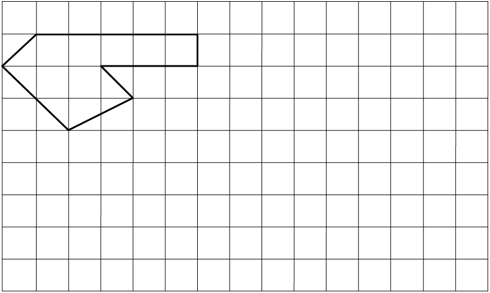
HERLEIDING VAN EENHEDE
Die figuur aan die regterkant wys ’n vierkant met sye van 1 cm.
Die oppervlakte van die vierkant is een vierkante sentimeter (1 cm2).
Hoeveel vierkante van 1 mm by 1 mm (1 mm2) sal in die
1 cm2 vierkant inpas?
Voltooi: 1 cm2 =
mm2
Om cm2 na mm2 te herlei (verander):
1 cm2 = 1 cm × 1 cm
= 10 mm × 10 mm
= 100 mm2
Net so, om mm2 na cm2 te herlei:
1 mm2 = 1 mm × 1 mm
= 0,1 cm × 0,1 cm
= 0,01 cm2
Ons kan dieselfde metode ook gebruik om tussen ander vierkante eenhede te herlei. Voltooi:
|
Van m2 na cm2:
1 m2 = 1 m × 1 m
=
cm ×
cm
=
cm2
|
Van cm2 na m2:
1 cm2 = 1 cm × 1 cm
= 0,01 m × 0,01 m
=
m2
|
|
|
So, om tussen m2, cm2 en mm2 te herlei, doen jy die volgende:
|
- • cm2 na mm2 vermenigvuldig met 100
- • m2 na cm2 vermenigvuldig met 10 000
|
- • mm2 na cm2 deel deur 100
- • cm2 na m2 deel deur 10 000
|
Doen die nodige berekeninge in jou oefeningboek. Vul dan jou antwoorde in.
1. (a) 5 m2 =
cm2 (b) 5 cm2 =
mm2
(c) 20 cm2 =
m2 (d) 20 mm2 =
cm2
2. (a) 25 m2 =
cm2 (b) 240 000 cm2 =
m2
(c) 460,5 mm2 =
cm2 (d) 0,4 m2 =
cm2
(e) 12 100 cm2 =
m2 (f) 2,295 cm2 =
mm2
9.4 Oppervlakte van vierkante en reghoeke
ONDERSOEK DIE OPPERVLAKTE VAN VIERKANTE EN REGHOEKE
1. Elk van die volgende vier figure is in vierkante verdeel wat almal ewe groot is, naamlik 1 cm by 1 cm.
A B C
D
(a) Gee die oppervlakte van elke figuur in vierkante sentimeter (cm2):
Oppervlakte van A:
Oppervlakte van B:
Oppervlakte van C:
Oppervlakte van D:
(b) Is daar ’n korter metode om die oppervlakte van elke figuur uit te werk?
Verduidelik.
2. Figuur BCDE is ’n reghoek en MNRS is ’n vierkant.

(a) Hoeveel cm2 (1 cm × 1 cm) sal in reghoek BCDE inpas?
(b) Hoeveel mm2 (1 mm × 1 mm) sal in reghoek BCDE inpas?
(c) Wat is die oppervlakte van vierkant MNRS in cm2?
(d) Wat is die oppervlakte van vierkant MNRS in mm2?
3. Figuur KLMN is ’n vierkant met sye van 1 m.
(a) Hoeveel vierkante met sye van 1 cm
sal langs die lengte van die vierkant inpas?
(b) Hoeveel vierkante met sye van 1 cm
sal langs die breedte van die vierkant inpas?
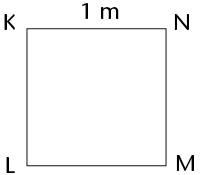
(c) Hoeveel vierkante (cm2) sal dus in die hele vierkant inpas?
(d) Voltooi: 1 m2 =
cm2
|
|
’n Vinnige manier om die getal vierkante te bereken wat in ’n reghoek sal inpas, is om die getal vierkante wat langs die lengte sal inpas te vermenigvuldig met die getal vierkante wat langs die breedte sal inpas.
|
FORMULES: OPPERVLAKTE VAN REGHOEKE EN VIERKANTE
In die reghoek aan die regterkant:
Getal vierkante = Vierkante langs die lengte × Vierkante langs die breedte
= 6 × 4
= 24

Hieruit kan ons die volgende aflei:
|
|
Oppervlakte van reghoek = Lengte van reghoek × Breedte van reghoek
A = l × b
(waar A die oppervlakte in vierkante eenhede, l die lengte en b die breedte is)
Oppervlakte van vierkant = Lengte van sy × Lengte van sy
A = l × l
= l2
(waar A die oppervlakte in vierkante eenhede en l die lengte van ’n sy is)
|
Vir die berekeninge moet die waardes van die eenhede dieselfde wees. Onthou:
- • 1 m = 100 cm en 1 cm = 10 mm
- • 1 cm2 = 1 cm × 1 cm = 10 mm × 10 mm = 100 mm2
- • 1 m2 = 1 m × 1 m = 100 cm × 100 cm = 10 000 cm2
- • 1 mm2 = 1 mm × 1 mm = 0,1 cm × 0,1 cm = 0,01 cm2
- • 1 cm2 = 1 cm × 1 cm = 0,01 m × 0,01 m = 0,0001 m2
Voorbeelde
1. Bereken die oppervlakte van ’n reghoek met ’n lengte van 50 mm en ’n breedte van
3 cm. Gee die antwoord in cm2.
Oplossing:
Oppervlakte van reghoek = l × b
= (50 × 30) mm2 of A = (5 × 3) cm2
= 1 500 mm2 of = 15 cm2
2. Bereken die oppervlakte van ’n vierkantige badkamerteël met ’n sy van 150 mm.
Oplossing:
Oppervlakte van vierkantige teël = l × l
= (150 × 150) mm2
= 22 500 mm2
Die oppervlakte is dus 22 500 mm2 (of 225 cm2).
3. Bereken die lengte van ’n reghoek as sy oppervlakte 450 cm2 en sy breedte 150 mm is.
Oplossing:
Oppervlakte van reghoek = l × b
450 = l × 15
30 × 15 = l × 15 of 450 ÷ 15 = l
30 = l 30 = l
Die lengte is dus 30 cm (of 300 mm).
TOEPASSING VAN DIE FORMULES
1. Bereken die oppervlakte van elk van die volgende figure:
(a) ’n reghoek met sye van 12 cm en 9 cm
(b) ’n vierkant met sye van 110 mm (antwoord in cm2)
(c) ’n reghoek met sye van 2,5 cm en 105 mm (antwoord in mm2)
(d) ’n reghoek met ’n lengte van 8 cm en ’n omtrek van 24 cm
2. ’n Rugbyveld het ’n lengte van 100 m (doelpaal tot doelpaal) en ’n breedte
van 69 m.
(a) Wat is die oppervlakte van die veld (sonder die oppervlakte agter die doelpale)?
(b) Wat sal dit kos om nuwe gras op daardie oppervlakte te plant teen R45/m2?
(c) Nog ’n eenheid om oppervlakte te meet is hektaar (ha). Dit word hoofsaaklik
gebruik om grond te meet. Die grootte van 1 ha is gelyk aan 100 m × 100 m.
Is ’n rugbyveld groter of kleiner as 1 ha? Verduidelik jou antwoord.
3. Doen die nodige berekeninge om die tabel te voltooi in jou oefeningboek.
(Al die afmetings verwys na reghoeke.)
|
|
|
|
|
|
(a)
|
m
|
8 m
|
120 m2
|
|
(b)
|
120 mm
|
mm
|
60 cm2
|
|
(c)
|
3,5 m
|
4,3 m
|
m2
|
|
(d)
|
2,3 cm
|
cm
|
2,76 cm2
|
|
(e)
|
5,2 m
|
460 cm
|
m2
|
4. Figuur A is ’n vierkant met sye van 20 mm. Dit is opgesny soos in A gewys en die dele is weer saamgevoeg om figuur B te vorm. Bereken die oppervlakte van figuur B.
A B
5. Margie plant ’n groentebedding van 12 m × 8 m.
(a) Wat is die oppervlakte van die bedding?
A = l × b
= 12 × 8
= 96 m2
(b) Sy plant die helfte van die bedding vol wortels en een kwart vol tamaties en die
ander kwart vol aartappels. Bereken die oppervlakte wat deur elke soort groente
bedek word.
Wortels: van 96 m2 = 48 m2
Tamaties en aartappels: elk van 96 m2 = 24 m2
(c) Hoeveel sal dit kos om die bedding te omhein? Die heining kos R38/m.
P = 2(l + b) = 2 × (12 + 8) = 2 × 20 = 40 m
40 m × R38 = R1 520
6. Meneer Allie moet ’n kombuisvloer van 5 m × 4 m teël.
Die blou teëls wat hy gebruik is elkeen 40 cm × 20 cm.
(a) Hoeveel teëls het meneer Allie nodig?
5 m = 500 cm; 4 m = 400 cm
Teëls langs die lengte: 500 ÷ 40 = 12,5 teëls
Teëls langs die breedte: 400 ÷ 20 = 20 teëls
Hy benodig 20 rye van 12,5 teëls = 250 teëls
(b) Die teëls word in bokse van 20 teëls verkoop. Hoeveel bokse moet hy koop?
VERDUBBELING VAN ’N SY EN DIE EFFEK OP OPPERVLAKTE
As ’n sy van ’n vierkant verdubbel, sal die oppervlakte van die vierkant ook verdubbel?
Die grootte van elke vierkant in die rooster hier onder is 1 cm × 1 cm.
1. (a) Merk die lengte van die sye van elke vierkant wat op die rooster geteken is.
(b) Skryf die oppervlakte van elke vierkant neer. (Skryf die antwoord binne-in die
vierkant.)
2. Let op dat die tweede vierkant in elke paar vierkante ’n sylengte het wat dubbel die sylengte van die eerste vierkant is.
3. Vergelyk die oppervlaktes van die vierkante in elke paar. Voltooi dan die volgende:
Wanneer die sy van ’n vierkant verdubbel word, word die oppervlakte

9.5 Oppervlakte van driehoeke
HOOGTES EN BASISSE VAN ’N DRIEHOEK
Die hoogte (h) van ’n driehoek is ’n loodregte lynstuk wat van ’n hoekpunt na
die teenoorstaande sy getrek word. Die teenoorstaande sy vorm ’n regte hoek met die hoogte en word die basis (b) van die driehoek genoem. Enige driehoek het drie hoogtes en drie basisse.

AD = hoogte BD = hoogte CD = hoogte
BC = basis AC = basis AB = basis
In ’n reghoekige driehoek is twee sye reeds loodreg op mekaar:

DF = hoogte EF = hoogte FG = hoogte
EF = basis DF = basis DE = basis
’n Basis moet soms verleng word tot buite die driehoek om die loodregte hoogte te kan teken. Dit word in die eerste en derde driehoeke hier onder gewys. Let op dat die verlengde deel nie deel van die basis se afmeting is nie:
JM = hoogte KM = hoogte LM = hoogte
KL = basis JL = basis JK = basis
1. Trek enige hoogte in elk van die volgende driehoeke. Merk die hoogte (h) en
basis (b) op elke driehoek.
2. Merk nog ’n stel hoogtes en basisse op elke driehoek.

FORMULE: OPPERVLAKTE VAN ’N DRIEHOEK
ABCD is ’n reghoek met lengte = 5 cm en breedte = 3 cm. Wanneer A en C verbind word, word twee driehoeke gevorm wat dieselfde oppervlakte het: ∆ABC en ∆ADC.
Oppervlakte van reghoek = l × b
Oppervlakte van ∆ABC (of ∆ADC) =  (Oppervlakte van reghoek)
(Oppervlakte van reghoek)
=  (l × b)
(l × b)
In reghoek ABCD is AD die lengte en CD is die breedte.
Maar kyk na ∆ADC. Kan jy sien dat AD ’n basis is en CD sy hoogte?
So in plaas daarvan om te sê:
Oppervlakte van ∆ADC of enige ander driehoek =  (l × b)
(l × b)
sê ons:
In die formule vir die
oppervlakte van ’n driehoek, beteken b “basis” en nie “breedte” nie en h beteken loodregte hoogte.
|
|
Oppervlakte van ’n driehoek =  (basis × hoogte) (basis × hoogte)
=  (b × h) (b × h)
|
TOEPASSING VAN DIE FORMULE VIR OPPERVLAKTE
1. Gebruik die formule om die oppervlaktes van die volgende driehoeke te bereken: ∆ABC, ∆EFG, ∆JKL en ∆MNP.


2. In elk van die figure hier onder is PQST ’n reghoek. Bereken by elke figuur die
oppervlakte van ∆PQR.
(a) (b)

(c) R is die middelpunt van QS.

3. Die oppervlakte van ∆ABC is 42 m2 en die loodregte hoogte is 16 m. Bepaal die lengte van die basis.
1. Bereken die omtrek (P) en oppervlakte (A) van die volgende figure:

2. Figuur ABCD is ’n reghoek:
AB = 3 cm, AD = 9 cm en TC = 4 cm.

(a) Bereken die omtrek van ABCD. (b) Bereken die oppervlakte van ABCD.
(c) Bereken die oppervlakte van ∆DTC. (d) Bereken die oppervlakte van ABTD.
In hierdie hoofstuk gaan jy die formules ondersoek wat ons kan gebruik om die
oppervlakte van die oppervlakke aan die buitekant van kubusse en reghoekige prismas te bereken. Die gebruik van nette van hierdie 3D-voorwerpe sal jou help om te verstaan hoe ons by hierdie formules uitkom. Dan gaan jy die formules ondersoek wat ons kan gebruik om die hoeveelheid ruimte te bereken wat soliede kubusse en reghoekige prismas in beslag neem. Hierdie hoeveelheid ruimte staan bekend as hulle volume. Jy sal dan die verskil tussen die volume en die kapasiteit van kubusse en reghoekige prismas begin verstaan.
Jy gaan ook leer oor die eenhede wat gebruik word om buite-oppervlakte, volume en
kapasiteit te bereken en jy gaan uitvind hoe om tussen verskillende meeteenhede te herlei.
10.1 Buite-oppervlakte van kubusse en reghoekige prismas 231
10.2 Volume van reghoekige prismas en kubusse 236
10.3 Herleiding tussen kubieke eenhede 240
10.4 Volume en kapasiteit 244

10 Buite-oppervlakte en volume van
3D-voorwerpe
10.1 Buite-oppervlakte van kubusse en reghoekige prismas
ONDERSOEK BUITE-OPPERVLAKTE
1. Volg die instruksies hier onder om ’n papierkubus te maak.
|
Stap 1: Sny ’n deel van ’n A4-bladsy af sodat jy ’n vierkant oor het.

|
Stap 2: Sny die vierkant in twee gelyke helftes.

|
|
Stap 3: Vou elke helfte in die lengte om twee dubbellaag stroke te vorm.

|
Stap 4: Vou elke strook om vier vierkante te vorm. Voeg die twee stroke saam om ’n kubus te vorm. Hou die dele bymekaar met kleeflint.
|
2. Nommer elke vlak van die kubus. Hoeveel vlakke het die kubus?
3. Meet die sylengte van een vlak van die kubus.
4. Bereken die oppervlakte van een vlak van die kubus.
5,2 cm × 5,2 cm = 27,04 cm2
5. Tel die oppervlaktes van al die vlakke van die kubus bymekaar.
27,04 cm2 × 6 = 162,24 cm2

|
|
Die buite-oppervlakte van ’n voorwerp is die som
van die oppervlaktes van al sy vlakke (of buitenste
oppervlakke). Net soos ander oppervlaktes, meet ons buite-
oppervlakte in vierkante eenhede soos mm2, cm2 en m2.
|
’n Kubus het ses identiese vierkantige vlakke. ’n Dobbelsteen is ’n voorbeeld daarvan.
’n Reghoekige prisma het ook ses vlakke, maar sy vlakke kan vierkante en/of reghoeke wees. ’n Vuurhoutjieboksie is ’n voorbeeld van so ’n reghoekige prisma.
Kubus Reghoekige prisma
GEBRUIK NETTE VAN REGHOEKIGE PRISMAS EN KUBUSSE
Dit is makliker om al die vlakke van ’n reghoekige prisma of kubus te sien as ons na die net kyk. Die net (of ontvouing) van ’n prisma is die plat figuur wat verkry word wanneer die prisma op sommige van sy rande oopgesny en dan oopgevou word.
1. Neem ’n vel papier en vou dit om ’n vuurhoutjieboksie sodat dit die hele boksie bedek sonder om te oorvleuel. Sny ekstra stukkies papier af sodat jy net die papier oor het wat elke vlak van die boksie bedek.
2. Vou die papier oop en trek lyne waar die papier gevou is. Jou vel papier kan soos een van die volgende nette lyk (daar is ook ander moontlikhede):

3. Let op dat daar ses reghoeke in die net is wat elkeen op ’n
reghoekige vlak van die boksie pas. Wys die drie pare identiese
reghoeke in elke net uit.
4. Gebruik die gegewe afmetings om die buite-oppervlakte van
die prisma te bereken. (Tel al die vlakke se oppervlaktes op.)
2 × (5 × 4) + 2 × (1 × 5) + 2 × (1 × 4) = 2 × 20 + 2 × 5 + 2 × 4
= 40 + 10 + 8 = 58 cm2
5. Verduidelik vir ’n maat waarom jy dink die volgende formule korrek is of nie:
Buite-oppervlakte van ’n reghoekige prisma = 2(l × b) + 2(l × h) + 2(b × h)
6. Hier is drie verskillende nette van dieselfde kubus.
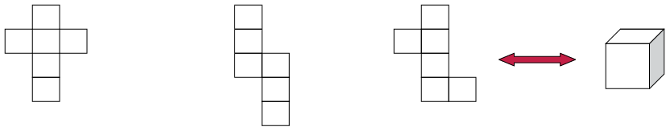
(a) Kan jy jou voorstel hoe die vierkante kan terugvou om ’n kubus te maak?
(b) As die lengte van ’n rand van die kubus 1 cm is, wat is die oppervlakte van een van
sy vlakke?
Wat is die oppervlakte van al ses sy vlakke dan?
(c) Verduidelik vir ’n maat waarom jy dink die volgende formule korrek is of nie:
Buite-oppervlakte van ’n kubus = 6(l × l) = 6l2
(d) As die lengte van ’n rand van die kubus hier bo 3 cm is, wat is die buite-
oppervlakte van die kubus?
BEREKEN BUITE-OPPERVLAKTES
1. Bereken die buite-oppervlaktes van die volgende reghoekige prismas en kubusse:
A B
C D
2. Die volgende twee bokse is reghoekige prismas. Die bokse moet geverf word.
Boks A Boks B

(a) Bereken die totale buite-oppervlakte van boks A en van boks B.
(b) Wat sal dit kos om albei bokse te verf as die verf R1,34 per m2 kos?
3. Twee houers, wat reghoekige prismas is, word
aan mekaar vasgeplak soos gewys word. Bereken
die buite-oppervlakte van hierdie voorwerp. (Let
op watter vlakke gesien kan word en watter nie.)
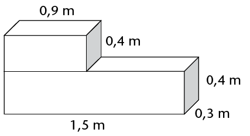
4. Hierdie groot plastiekmuur is
3 m × 0,5 m × 1,5 m. Dit
moet vir die Uyavula
Geletterdheidsprojek geverf
word. Die muur het drie
openinge wat A, B en C
gemerk is. Die openinge gaan
dwarsdeur die muur. Hulle
afmetings is in mm.
(a) Bereken die oppervlakte van die voorste en agterste
oppervlakke wat geverf moet word.
Onthou uit die vorige hoofstuk:
1 cm2 = 100 mm2
1 m2 = 10 000 cm2
Herlei die openinge se afmetings van mm na m.
2[3 × 1,5 − (0,6 × 0,5 + 0,4 × 0,75 + 0,6 × 0,6)]
= 2[4,5 − (0,3 + 0,3 + 0,36)]
= 2(4,5 − 0,96)
= 2(3,54)
= 7,08 m2
(Ander metode: bereken die openinge se “oppervlakte” in mm2 en herlei
dan na m2.)
(b) Bereken die oppervlakte van die twee syvlakke asook van die bovlak.
Syvlakke: Bovlak:
2(0,5 × 1,5) 3 × 0,5
= 2 × 0,75 = 1,5 m2 = 1,5 m2
(c) Bereken die totale buite-oppervlakte van die muur, sonder die onderkant en die
binne-oppervlakke waar die openinge is, want dit gaan nie geverf word nie.
7,08 + 1,5 + 1,5
= 10,08 m2
(d) Wat sal dit kos as die waterbasisverf R2,00 per m2 kos?
10,08 × 2
= R20,16
10.2 Volume van reghoekige prismas en kubusse
2D-figure is plat en het net twee dimensies, naamlik lengte (l) en breedte (b).
3D-voorwerpe het drie dimensies, naamlik lengte (l), breedte (b) en hoogte (h). Jy kan aan ’n dimensie dink as ’n rigting in ruimte. Kyk na hierdie voorbeelde:
2D-figuur: reghoek 3D-voorwerp: reghoekige prisma

3D-voorwerpe neem dus ruimte in beslag op ’n
manier wat 2D-figure dit nie doen nie. Ons kan die
hoeveelheid ruimte meet wat 3D-voorwerpe in
Elke voorwerp in die
werklikheid is 3D. Selfs ’n vel papier is ’n 3D-voorwerp. Sy hoogte is omtrent 0,1 mm.
beslag neem.
KUBUSSE OM HOEVEELHEID RUIMTE TE MEET
Ons kan kubusse gebruik om die hoeveelheid ruimte te meet wat ’n voorwerp in beslag neem.
1. Identiese kubusvormige boublokkies is gebruik om die stapels hier onder te maak.
(a) Watter stapel neem die minste ruimte in beslag?
(b) Watter stapel neem die meeste ruimte in beslag?
(c) Rangskik die stapels van die een wat die minste ruimte in beslag neem tot die een
wat die meeste ruimte in beslag neem. (Skryf die letters van die stapels neer.)
B, A, E, C, F, D
(Aantal kubusse per stapel: A = 12; B = 6; C = 24; D = 140; E = 20; F = 60)
|
|
Die ruimte (in alle rigtings) wat deur ’n 3D-voorwerp in beslag geneem word, word sy volume genoem.
Ons gebruik kubieke eenhede om volume te meet. ’n
Kubus met rande van 1 cm (d.w.s. 1 cm × 1 cm × 1 cm) het ’n volume van een kubieke sentimeter (1 cm3).
|
2. Die reghoekige prisma hier regs bestaan uit 36 kubusse,
elk met ’n randlengte van 1 cm. Die prisma het dus ’n
volume van 36 kubieke sentimeter (36 cm3).
(a) Dit word uitmekaargehaal en al 36 kubusse word weer opgestapel om ’n nuwe
reghoekige prisma met ’n basis van vier kubusse te maak (sien A hier onder.)
Hoeveel lae kubusse sal die nuwe prisma hê? Wat is die hoogte van die nuwe prisma?
A B

(b) Herhaal (a), maar maak ’n prisma met ’n basis van ses kubusse (sien B hier bo).
(c) Watter een van die reghoekige prismas in vrae (a) en (b) neem die meeste ruimte
in alle rigtings in beslag? (Watter een het die grootste volume?)
(d) Wat sal die volume van die prisma in vraag (b) wees as daar altesaam 7 lae
kubusse is?
(e) ’n Prisma word met 48 kubusse gebou, elkeen met ’n randlengte van 1 cm.
Die basis bestaan uit 8 lae. Wat is die hoogte van die prisma?
FORMULE OM VOLUME TE BEREKEN
Jy kan op die volgende wyse aan die volume van ’n reghoekige prisma dink:
Stap 1: Meet die oppervlakte van die
onderste vlak (ook die basis genoem)
van ’n reghoekige prisma. Vir die
prisma wat hier gegee word:
A = l × b = 6 × 3 = 18 vierkante eenhede.
Stap 2: ’n Laag kubusse wat elk 1 eenheid
hoog is, word op die plat basis geplaas.
Die basis bestaan nou uit 18 kubusse. Dit is
6 × 3 × 1 kubieke eenhede.
Stap 3: Nog drie lae kubusse word bygevoeg
sodat daar altesaam 4 lae is. Die prisma se
hoogte (h) is 4 eenhede. Die volume van die
prisma is:
V = (6 × 3) × 4
of V = Oppervlakte van basis × getal lae
= (l × b) × h
Dus:
|
|
Volume van ’n reghoekige prisma = Oppervlakte van basis × hoogte
= l × b × h
Volume van ’n kubus = l × l × l (rande is almal ewe lank)
= l3
|
TOEPASSING VAN DIE FORMULES
1. Bereken die volume van hierdie prismas en kubusse.
A B
C D
2. Bereken die volume van prismas met die volgende afmetings:
(a) l = 7 m, b = 6 m, h = 6 m (b) l = 55 cm, b = 10 cm, h = 20 cm
(c) Oppervlakte van basis = 48 m2, (d) Oppervlakte van basis = 16 mm2,
h = 4 m h = 12 mm
3. Bereken die volume van kubusse met die volgende randlengtes:
(a) 7 cm (b) 12 mm
4. Bereken die volume van die volgende prismas met vierkantige basisse:
(a) sy van die basis = 5 mm, h = 12 mm (b) sy van die basis = 11 m, h = 800 cm
5. Die volume van ’n prisma is 375 m3. Wat is die hoogte van die prisma as die lengte
8 m is en die breedte 15 m is?

10.3 Herlei tussen kubieke eenhede
KUBIEKE EENHEDE OM VOLUME TE MEET
Hierdie tekening wys ’n kubus (A) met ’n randlengte
van 1 m. ’n Klein kubus (B) met ’n randlengte van
1 cm word ook gewys.
Hoeveel klein kubusse kan in die groot kubus inpas?
- • 100 klein kubusse kan langs die lengte van die basis
van kubus A inpas (want daar is 100 cm in 1 m).
- • 100 klein kubusse kan langs die breedte van die
basis van kubus A inpas.
- • 100 klein kubusse kan langs die hoogte van
kubus A inpas.
Totale getal kubusse van 1 cm3 in 1 m3 = 100 × 100 × 100
= 1 000 000
∴ 1 m3 = 1 000 000 cm3
Werk uit hoeveel mm3 is gelyk aan 1 cm3:
1 cm3 = 1 cm × 1 cm × 1 cm
=
mm ×
mm ×
mm
=
mm3
|
|
Kubieke eenhede:
1 m3 = 1 000 000 cm3
(vermenigvuldig met 1 000 000 om m3 na cm3 te herlei)
1 cm3 = 0,000001 m3
(deel deur 1 000 000 om cm3 na m3 te herlei)
1 cm3 = 1 000 mm3
(vermenigvuldig met 1 000 om cm3 na mm3 te herlei)
1 mm3 = 0,001 cm3
(deel deur 1 000 om mm3 na cm3 te herlei)
|
WERK MET KUBIEKE EENHEDE
1. Watter eenheid, die kubieke sentimeter (cm3) of die kubieke meter (m3), sal gebruik word om die volume van elk van die volgende te meet?
(a) ’n koekie seep
(b) ’n boek
(c) ’n dakbalk
(d) sand op ’n vragmotor
(e) ’n reghoekige betonmuur
(f) ’n dobbelsteen
(g) water in ’n swembad
(h) medisyne in ’n spuit
2. Skryf die volgende volumes in cm3:
(a) 1 000 mm3
(b) 3 000 mm3
(c) 2 500 mm3
(d) 4 450 mm3
(e) 7 824 mm3
(f) 50 mm3
3. Skryf die volgende volumes in m3:
(a) 1 000 000 cm3
(b) 4 000 000 cm3
(c) 1 500 000 cm3
(d) 2 350 000 cm3
(e) 500 000 cm3
(f) 350 000 cm3
4. Skryf die volgende volumes in cm3:
(a) 2 000 mm3
(b) 4 120 mm3
(c) 1,5 m3
(d) 34 m3
(e) 50 000 mm3
(f) 2,23 m3
5. ’n Reghoekige gat is vir ’n kinderswembad gegrawe. Dit is 7 m lank, 4 m wyd en 1 m diep. Wat is die volume grond wat uitgegrawe is?
7 × 4 × 1 = 28 m3
6. Bereken die volume hout in die plank wat hier onder gewys word. Antwoord in cm3.

5 cm × 10 cm × 1 cm = 50 cm3
of 50 mm × 100 mm × 10 mm = 50 000 mm3 = 50 cm3
7. Die tekening wys die basis (van onder af
gesien) van ’n stapel wat met kubusse
van 1 cm3 gebou is. Die stapel is orals
80 mm hoog.
(a) Wat is die volume van die stapel?
(6 × 10) + (2 × 4) = 60 + 8 = 68 cm2
68 cm2 × 0,8 cm = 54,4 cm3
(b) Voltooi die volgende:
Volume van stapel = oppervlakte van basis
8. Bereken die volume van elk van die volgende reghoekige prismas:
(a) lengte = 20 cm; breedte = 15 cm; hoogte = 10 cm
(b) lengte = 130 mm; breedte = 10 cm; hoogte = 5 mm
(c) lengte = 1 200 cm; breedte = 5,5 m; hoogte = 3 m
(d) lengte = 1,2 m; breedte = 2,25 m; hoogte = 4 m
(e) oppervlakte van basis = 300 cm2; hoogte = 150 mm
(f) oppervlakte van basis = 12 m2; hoogte = 2,25 m
10.4 Volume en kapasiteit
Die ruimte in ’n houer word die interne volume, of kapasiteit, van die houer genoem. Kapasiteit word dikwels in eenhede van milliliter (ml), liter (ℓ) en kiloliter (kl) gemeet. Dit kan egter ook in kubieke eenhede gemeet word.
EKWIVALENTE EENHEDE VIR VOLUME EN KAPASITEIT
As die inhoud van ’n 1 ℓ-bottel in ’n kubus-
vormige houer met interne afmetings van
10 cm × 10 cm × 10 cm gegooi word, sal dit die
houer presies volmaak. Dus:
(10 cm × 10 cm × 10 cm) = 1 ℓ
of 1 000 cm3 = 1 ℓ
Aangesien 1 ℓ = 1 000 ml
1 000 cm3 = 1 000 ml [1 ℓ = 1 000 cm3]
∴ 1 cm3 = 1 ml [deel albei kante deur 1 000]
Aangesien 1 kl = 1 000 ℓ
= 1 000 × (1 000 cm3) [1 ℓ = 1 000 cm3]
= 1 000 000 cm3
= 1 m3 [1 000 000 cm3 = 1 m3]
Dit beteken ’n voorwerp met ’n volume van 1 cm3 sal dieselfde hoeveelheid ruimte in beslag neem as 1 ml water. ’n Voorwerp met ’n volume van 1 m3 sal die ruimte van
1 kl water in beslag neem.
Die volgende diagram wys die herleidings op ’n ander manier:
Herleiding is die verandering van iets na iets anders. In hierdie geval verwys dit na veranderings tussen ekwivalente meeteenhede.
× 1 000 × 1 000
1 ml ⟶ 1 ℓ (of 1 000 ml) ⟶ 1 kl (of 1 000 ℓ)
1 cm3 ⟶ 1 000 cm3 ⟶ 1 m3 (of 1 000 000 cm3)
× 1 000 × 1 000
Uit die diagram op die vorige bladsy kan jy sien dat:
- • 1 ℓ = 1 000 ml; 1 ml = 0,001 ℓ
- • 1 kl = 1 000 ℓ; 1 ℓ = 0,001 kl
- • 1 ml = 1 cm3
- • 1 ℓ = 1 000 cm3
- • 1 kl = 1 000 000 cm3 of 1 m3
|
|
Onthou hierdie herleidings:
1 ml = 1 cm3
1 kl = 1 m3
|
BEREKENINGE MET VOLUME EN KAPASITEIT
1. Skryf die volgende volumes in ml:
(a) 2 000 cm3
(b) 250 cm3
(c) 1 ℓ
(d) 4 ℓ
(e) 2,5 ℓ
(f) 6,85 ℓ
(g) 0,5 ℓ
(h) 0,5 cm3
2. Skryf die volgende volumes in kl:
(a) 2 000 ℓ
(b) 2 500 ℓ
(c) 5 m3
(d) 6 500 m3
(e) 3 000 000 cm3
(f) 1 423 000 cm3
(g) 20 ℓ
(h) 2,5 ℓ
3. ’n Glas kan tot 250 ml water hou. Wat is die kapasiteit van die glas:
(a) in ml?
(b) in cm3?
4. ’n Blompot is soos ’n reghoekige prisma gevorm.
Die binne-afmetings is 15 cm × 10 cm × 20 cm.
Wat is die kapasiteit van die blompot (in ml)?
15 × 10 × 20
= 3 000 cm3
= 3 000 ml
5. ’n Vloeistof word uit ’n vol
2 ℓ-bottel in ’n glastenk met
binne-afmetings van
20 cm by 20 cm by 20 cm gegooi.
(a) Wat is die volume van die
vloeistof wanneer dit in die
bottel is?
2 000 cm3 of 2 ℓ
(b) Wat is die kapasiteit van die bottel?
(Ten minste) 2 000 cm3 of 2 ℓ
(c) Wat is die volume van die vloeistof nadat dit in die tenk gegooi is?
(d) Wat is die kapasiteit van die tenk?
(e) Hoe hoog is die vloeistof in die tenk?

In vraag 5 hier bo behoort jy die volgende te gevind het:
Volume van vloeistof in tenk = Volume van vloeistof in bottel
20 × 20 × h (vloeistof se hoogte in tenk) = 2 000 cm3
h = 
= 5 cm
Let wel: Die kapasiteit van die tenk is 20 cm × 20 cm × 20 cm = 8 000 cm3 (8 ℓ).
Die volume van die vloeistof in die bottel is 2 000 cm3 (2 ℓ).
1. Doen die volgende herleidings:
(a) 2 348 cm2 =
m2 (b) 5,104 m2 =
cm2
(c) 1 m3 =
kl (d) 250 cm3 =
ml =
ℓ
(e) 0,5 kl =
ℓ =
ml (f) 6,850 ℓ =
ml =
cm3
2. ’n Reghoekige prisma se afmetings is 8 m × 4 m × 3 m. Bereken:
(a) die buite-oppervlakte (b) die volume
3. ’n Seun het 27 kubusse met randlengtes van 20 mm. Hy gebruik hierdie kubusse
om een groot kubus te bou.
(a) Wat is die volume van die kubus as hy al 27 klein kubusse gebruik?
(b) Wat is die randlengte van die groot kubus?
(c) Wat is die buite-oppervlakte van die groot kubus?
4. ’n Glastenk het die volgende binne-afmetings: lengte = 250 mm,
breedte = 120 mm en hoogte = 100 mm. Bereken die kapasiteit van die tenk:
(a) in kubieke sentimeter
(b) in milliliter
(c) in liter
5. Bereken die kapasiteit van elk van die volgende reghoekige houers. Die binne-
afmetings is gegee.
|
|
Lengte
|
Breedte
|
Hoogte
|
Kapasiteit
|
|
(a)
|
15 mm
|
8 mm
|
5 mm
|
cm3
|
|
(b)
|
2 m
|
50 cm
|
30 cm
|
ℓ
|
|
(c)
|
3 m
|
2 m
|
1,5 m
|
kl
|
6. ’n Watertenk het ’n vierkantige basis met interne randlengtes van 150 mm.
Wat is die hoogte van die tenk as die maksimum kapasiteit van die tenk
11 250 cm3 is?
Hersiening 250
- • Breuke 250
- • Die desimale notasie vir breuke 251
- • Verbande tussen veranderlikes 253
- • Omtrek en oppervlakte van 2D-figure 254
- • Buite-oppervlakte en volume van 3D-voorwerpe 256
Assessering 259
Hersiening
Moenie ’n sakrekenaar vir enige van die vrae in hierdie afdeling gebruik nie, tensy daar vir jou gesê word dat jy dit mag gebruik. Wys al jou stappe van berekening.
BREUKE
1. Bereken die volgende:
(a) 3 + 2
+ 2 (b) 4
(b) 4 − 3
− 3
=  −
− 
(c)  −
− 
(gee jou antwoord as ’n gemengde getal)
(d) 2 × 1
× 1
2. Driekwart van ’n getal is 63. Wat is die getal?
Let the number be x. × x = 63 ∴ x = × = 252 ÷ 3 = 84
3. Skryf al die breuke in hierdie lys neer wat kleiner as een agtste is:
 ;
;  ;
;  ;
; 
;
4. Laerskool Klipheuwel se o.-13A sokkerspan het ’n goeie seisoen gehad en vyf sesdes van hulle wedstryde gewen. As die span daardie seisoen 12 wedstryde gespeel het, hoeveel het hulle verloor?
van 12 = × 12 = 10 wedstryde is gewen. Hulle het twee wedstryde verloor.
5. Skryf langs elke getallery of dit stygend, dalend of nie een van die twee is nie:
(a)  ;
;  ;
;
(b)  ;
;  ;
; 
(c)  ;
;  ;
; 
(d)  ;
;  ;
; 
6. ’n Meningsopname onder 80 Graad 7-leerders het getoon dat 60% van die leerders Justin Bieber as die beste sanger beskou. Hoeveel leerders dink hy is die beste sanger?
60% of 80 = 0,60 × 80 = 48 learners (or × = 48)
7. Moeketsi het R450 ingesamel van die R3 000 wat sy klas altesaam vir die liefdadigheidsorganisasie ABC for Life ingesamel het. Watter persentasie van die totaal het Moeketsi ingesamel?
450 ÷ 3 000 = 0,15 (or × = 15%)
Moeketsi collected 15% of the total amount.
8. Best Wear het ’n uitverkoping op al hulle rokke gehad. Wat was die persentasie-afname in die prys van ’n rok wat voorheen R600 gekos het, maar vir R480 op uitverkoping was?
R600 − R480 = R120
120 ÷ 600 = 0,20 (or × = 20) The percentage reduction was 20%.
DIE DESIMALE NOTASIE VIR BREUKE
1. Herrangskik die volgende getalle van die kleinste tot die grootste:
(a) 0,04;  ; 14%; 0,4%
; 14%; 0,4%
0,4%; 0,04; 14%;
(b) 0,798; 0,789; 0,8; 0,79
0,789; 0,79; 0,798; 0,8
2. Wat is die waarde van die 7 in 4,5678? Skryf jou antwoord as ’n gewone breuk.

3. Vul die ontbrekende getalle in die blokkies in:
(a) 7,99
8 (b) 9,123; 9,121;
; 9,117; …
4. Verbind al die getallepare wat 1 as antwoord gee as hulle met mekaar vermenigvuldig word. Die eerste een is vir jou gedoen. Let op dat jy nie al die getalle aan die regterkant sal gebruik nie.

5. Bereken die volgende:
(a) 5,673 − 3,597 (b) 4,85 × 1,2 (c) 4,825 ÷ 5
6. ’n Gedeelte van elke figuur hier onder is ingekleur. Druk die gedeelte uit as ’n gewone breuk (in eenvoudigste vorm), as ’n desimale getal en as ’n persentasie.
(a) (b)
 ; 0,25; 25%
; 0,25; 25%
 ; 0,4; 40%
; 0,4; 40%
VERBANDE TUSSEN VERANDERLIKES
1. (a) Hier is ’n getallery: 1; 4; 10; 22;
;
Die reël wat gebruik word om die getallery uit te brei is “vermenigvuldig
met 2, tel dan 2 by”. Skryf die volgende twee getalle in die getallery neer.
(b) Hier is nog ’n getallery: 100; 50; 25; …
Skryf die reël van hierdie getallery in woorde neer.
Divide by two or halve each number (or any equivalent answer).
2. Gebruik die gegewe reël om die ontbrekende waardes te bereken en/of bepaal die reël:
(a) (b)
(c) (d)
3. (a) Daar is ’n eenvoudige verband (vermenigvuldig met …) tussen die y-waardes
en die x-waardes in die tabel. Bepaal dit en vul dan die ontbrekende waardes in.
|
x
|
0,1
|
0,3
|
0,6
|
2,5
|
3,2
|
4,1
|
|
y
|
4
|
12
|
24
|
100
|
128
|
164
|
(b) Skryf die reël wat die verband tussen die x-waardes en y-waardes beskryf in
woorde neer.
Multiply the x value by 40.
4. (a) Daar is ’n eenvoudige verband (tel ... by) tussen die x-waardes en die
y-waardes in die tabel hier onder. Bepaal die verband en vul dan die
ontbrekende waardes in die tabel in.
(b) Skryf die reël waarvolgens die ontbrekende x- en y-waardes bereken kan word
in woorde.
Add to the x value.
5. Die reël wat gebruik word om die verband tussen die x-waardes en y-waardes in die tabel te beskryf, is “verdubbel die x en trek dan 2 af”. Gebruik die reël om die ontbrekende waardes in die tabel te bepaal en vul hulle in.
|
x
|
4
|
8
|
12
|
15
|
22
|
51
|
|
y
|
6
|
14
|
22
|
28
|
42
|
100
|
OMTREK EN OPPERVLAKTE VAN 2D-FIGURE
1. (a) ’n Reghoek se oppervlakte is 48 cm2 en sy lengte is 8 cm. Wat is sy breedte?
A = l × b therefore 48 = 8 × b
6 = b The rectangle is 6 cm wide.
(b) ’n Ander reghoek het ’n oppervlakte van 72 cm2 en is twee keer so lank as wat dit
breed is. Bepaal die afmetings van hierdie reghoek.
Let the width be x. Area of the rectangle = (2x × x) = 2x2 = 72
x2 = 36 therefore x = 6
The rectangle is 12 cm long and 6 cm wide.
(c) ’n Driehoek het ’n basis van 10 cm en ’n oppervlakte van 20 cm2. Wat is die
hoogte van die driehoek?
Area of the triangle = (base × height) = 20 cm2 Height = 40 cm2 ÷ 10 cm
= 4 cm
(d) Wat is die lengte van die sy van ’n vierkant met ’n oppervlakte van 144 cm2?
Area of the square = l2 = 144 cm2
l = 12 cm
2. ’n Gelyksydige driehoek met sye van 8,4 cm en ’n vierkant het dieselfde omtrek. Bepaal die lengte van die sy van die vierkant.
Perimeter of the triangle = 3 × 8,4 cm = 25,2 cm
Perimeter of the square = 25,2 cm
Side of the square = 25,2 cm ÷ 4 = 6,3 cm
3. Bereken die oppervlakte van die grys gekleurde figure:
(a) DEFG is ’n reghoek. Die afmetings van die sye is aangedui.
Area of DEFG = 1 × 4 = 4
Height of triangle = 3 − 1 = 2
Area of triangle = (4 × 2) = 4
Total shaded area = 4 + 4 = 8 units2
(b) ABCD is ’n reghoek. AB = 5 cm en FC = 2 cm. Gee jou antwoord in vierkante
millimeter. (Jy mag ’n sakrekenaar gebruik in hierdie vraag.)
Area of ABCD = AB × BC
AB = 5 cm
BC = FC = 2 cm
Area of ABCD = 5 cm × 2 cm = 10 cm2
Area of BCF = area of ADE = (FC × BC)
Area of BCF = (2 cm × 2 cm) = 2 cm2
Total shaded area = area of ABCD − area of BCF − area of ADE
= 10 cm2 − 2 cm2 − 2 cm2
= 6 cm2 600 mm2
4. Die diagram toon meneer en mevrou Mbuli se tuin (nie volgens skaal nie). Daar is ’n
struikheining rondom die tuin, behalwe daar waar die 2 meter wye hek is (van A tot B). Die ingekleurde oppervlakte is ’n grasperk. Die res het bome, struike, ens.
Garden Dream het die Mbuli’s R5 per vierkante meter gekwoteer om hulle grasperk te sny en R10 per meter om hulle heining te snoei. BTW is by hierdie pryse ingesluit. Wat was die totale bedrag wat Garden Dream gekwoteer het?
Perimeter of the garden = (2 × 6 m) + (2 × 7 m)
= 26 m
Length of hedge = 26 m − 2 m = 24 m
Grassed area = (7 m − 2 m) × (6 m − 2 m)
= 20 m2
Cost to trim hedge = R10 × 24 m = R240
Cost to mow lawn = R5 × 20 m2 = R100
Quote = R240 + R100 = R340
BUITE-OPPERVLAKTE EN VOLUME VAN 3D-VOORWERPE
1. ’n Vistenk se binne-afmetings is 1,2 m × 60 cm × 70 cm. Hoeveel liter water sal die vistenk hou as dit tot oorlopens toe vol is?
Volume of the tank = 1,2 m × 0,6 m × 0,7 m
= 0,504 m3The tank will hold 504 ℓ.
2. ’n Reghoekige prisma het ’n lengte van 4 cm, ’n breedte van 10 cm en ’n volume van 240 cm3. Wat is die hoogte van die prisma?
Height = volume ÷ (length × width)= 6 cm
3. ’n Reghoekige prisma het ’n bepaalde volume. Watter van die volgende sal die volume van die prisma verdubbel? Merk die korrekte antwoord(e).
 Verdubbeling van al die afmetings
Verdubbeling van al die afmetings
Verdubbeling van slegs die lengte
Verdubbeling van die lengte en die breedte, en halvering van die hoogte
 Verdubbeling van die lengte, halvering van die breedte maar die hoogte bly
Verdubbeling van die lengte, halvering van die breedte maar die hoogte bly
onveranderd
4. Kyk na hierdie diagram van ’n reghoekige prisma wat uit 16 kubusse bestaan:

Teken op dieselfde rooster twee verskillende reghoekige prismas met dieselfde volume as die een wat hier gewys word.
5. Die totale buite-oppervlakte van ’n kubus is 150 cm2. Bepaal die kubus se volume.
Surface area of 1 face (a square) of the cube = 150 cm2 ÷ 6 = 25 cm2
Side length of 1 square = = 5 cm
Volume of the cube = 5 cm × 5 cm × 5 cm
= 125 cm3
6. Die volume van ’n kubus is 64 cm3. Bepaal die kubus se totale buite-oppervlakte.
Sylengte van 1 vlak = = 4 cm ; oppervlakte van 1 vlak = 4 cm × 4 cm = 16 cm2
Buite-oppervlakte = 6 × 16 cm2 = 96 cm2
7. Om water te bespaar wanneer die toilet gespoel word, het mev. Patel ’n baksteen in die spoelbak gesit. Die binne-afmetings van die spoelbak is 30 cm × 30 cm × 10 cm, en die baksteen saam met ander interne meganismes het ’n volume van 1 000 cm3.
(a) Bereken hoeveel liter water die spoelbak hou as die water tot 5 cm onder die
bokant van die spoelbak opvul.
Volume van spoelbak = 30 cm × 30 cm × 10 cm = 9 000 cm3
Volume nie met water gevul nie = (5 cm × 30 cm × 10 cm) + 1 000 cm3
Die spoelbak hou 6,5 ℓ water.
(b) Gestel die Patel-gesin spoel die toilet ’n gemiddeld van 12 keer per dag. Gebruik
jou sakrekenaar om te bepaal hoeveel kiloliter water hulle op hierdie manier in
een jaar sal gebruik.
12 × 6,5 ℓ × 365 dae = 28 470 ℓ per jaar = 28,470 kl per jaar
8. Njabulo wil die buitekant van ’n houtkis, wat in die vorm van ’n reghoekige prisma is,
vernis. Die onderkant van die kis hoef nie vernis te word nie want dit is op die grond.
Die kis is 1,5 m lank, 50 cm breed en 80 cm hoog. Bepaal, in vierkante meter, die
totale buite-oppervlakte wat vernis moet word.
Surface area of chest = 2(1,5 m × 0,5 m) + 2(1,5 m × 0,8 m) + 2(0,5 m × 0,8 m)
= 4,7 m2
Surface area to varnish = 4,7 m2 − 3,95 m2
9. Die diagram toon die net van ’n reghoekige
prisma wat op ’n rooster geteken is. As elke
blokkie op die rooster ’n vierkant met ’n
sylengte van 1 eenheid is, bereken:
(a) Die totale buite-oppervlakte van die
prisma
8 × 4 + 10 × 2 = 52
The total surface area = 52 units2
(b) Die volume van die prisma
2 × 3 × 4 = 24
The volume = 24 units3
Assessering
In hierdie afdeling dui die getalle tussen hakies aan die einde van ’n vraag aan hoeveel punte die vraag werd is. Gebruik hierdie inligting om jou te help besluit hoeveel werk nodig is by elke vraag.
Die totale getal punte wat aan hierdie
assessering toegeken word, is 60.
Let wel: Moenie jou
sakrekenaar gebruik nie!

1.  is die helfte van x. Wat is die waarde van x? (2)
is die helfte van x. Wat is die waarde van x? (2)
2 × =
2. Die diagram toon ’n vierkant wat uit blokkies bestaan. Agt
van hierdie blokkies is ingekleur. Beskryf die ingekleurde
gedeelte met ’n breuk, in sy eenvoudigste vorm. (2)
=
3. Bereken die volgende:
(a) 2 × 1 (b)
(b)  −
−  (6)
(6)
=  = 4
= 4
= 
4. Mevrou Baker het ’n koek gebak. ’n Paar dames het by haar kom tee drink en hulle
het die helfte van die koek geëet. Haar seun John het ’n kwart van die res van die
koek geëet. Watter breukdeel van die koek is oor? (2)
× =
− = There is of the cake left.
5. As die petrolprys oor die afgelope 2 jaar van R8 per liter tot R12 per liter gestyg het, met hoeveel persent het dit gestyg? (2)
R12 − R8 = R4 R4 ÷ R8 = 0,50 50% increase
6. Die Cupido’s het getrek. Tydens die trek het 5% van hulle breekware gebreek.
Hulle het 57 ongebreekte stukke breekware oor. Hoeveel stukke het tydens die
trek gebreek? (2)
57 pieces = 95% (57 pieces left after 5% broke)57 ÷ 95% = 60
60 − 57 = 3
3 pieces broke in the move
7.  = 0,0375; = 0,0425; = 0,0475
= 0,0375; = 0,0425; = 0,0475
Gebruik die inligting hier bo om die desimale ekwivalente van die volgende breuke neer te skryf:
(a)  =
=
(b)  =
=
(c)  =
=
(3)
8. Vermenigvuldig 56,76147 met 100 en rond jou antwoord tot twee desimale
plekke af. (2)
5 676,15
9. Buti gaan winkel toe en koop twee koeldranke teen R7,50 elk en drie pakkies
skyfies teen R5,95 elk. Hoeveel kleingeld moet hy kry as hy met ’n R50-noot
betaal? (4)
Total cost: 2 × R7,50 + 3 × R5,95
= R32,85
R50 − R32,85 = R17,15
He should get R17,15.
10. Laerskool Grace se 7A-klas samel geld in vir drie liefdadigheidsorganisasies. As die
totaal wat hulle ingesamel het R823,80 is en die geld in gelyke dele aan die drie organisasies toegeken word, hoeveel sal elke organisasie ontvang? (2)
R823,80 ÷ 3 = R274,60
Each charity receives R274,60.
11. Gebruik die gegewe reël om die ontbrekende waardes te bereken: (3)

(a) Daar is ’n eenvoudige verband (tel ... by) tussen die waardes van x en dié
van y. Bepaal die verband en skryf dan die ontbrekende waardes in die
tabel neer. (2)
|
x
|
0,15
|
0,76
|
0,99
|
1,71
|
17,68
|
|
y
|
1,4
|
2,01
|
2,24
|
2,96
|
18,93
|
(b) Skryf die reël waarvolgens die ontbrekende x- en y-waardes bereken kan word
in woorde. (1)
Add 1,25 to the value of x.
12. Die totale oppervlakte van die reghoek is 112 cm2. Bepaal die lengtes van a en b.
(3)
Total area = a × 10 cm
a = 112 cm2 ÷ 10 cm = 11,2 cm
a = b + 6,8 cm
b = 11,2 cm − 6,8 cm
= 4,4 cm
13. Die figuur hier onder is ’n reghoek, met afmetings soos gewys. ’n Vierkant het dieselfde omtrek as hierdie reghoek. Hoe lank is een sy van die vierkant? (2)
Perimeter of the rectangle = 2 × 9 cm + 2 × 4 cm = 26 cm
Side of the square = 26 cm ÷ 4
= 6,5 cm
14. Die diagram wys ’n reghoek wat in ’n driehoek en ’n trapesium verdeel is. Bereken
die ingekleurde oppervlakte en gee jou antwoord in mm2.
(5)
Total area of the rectangle = 9 cm × 4 cm
= 36 cm2
Area of the triangle = (9 cm − 5,5 cm) × 4 cm
= 7 cm2
Shaded area = 36 cm2 − 7 cm2
= 29 cm2 = 2 900 mm2
15. Die lengte en breedte van ’n reghoek word verdubbel.
(a) Merk die stelling wat korrek is:
 Die omtrek van die reghoek bly dieselfde.
Die omtrek van die reghoek bly dieselfde.
Die omtrek van die reghoek verdubbel.
 Die omtrek van die reghoek neem toe maar dit is nie moontlik om te sê
Die omtrek van die reghoek neem toe maar dit is nie moontlik om te sê
presies met hoeveel nie.
(b) Merk die stelling wat korrek is:
 Die oppervlakte van die reghoek bly dieselfde.
Die oppervlakte van die reghoek bly dieselfde.
 Die oppervlakte van die reghoek verdubbel.
Die oppervlakte van die reghoek verdubbel.
 Die oppervlakte van die reghoek verdrievoudig.
Die oppervlakte van die reghoek verdrievoudig.
Die oppervlakte van die reghoek verviervoudig.
(c) Verduidelik jou antwoord op vraag (b). (3)
Both dimensions are doubled, so overall the area will be 2 × 2 = 4 times bigger.
16. ’n Reghoekige prisma het ’n volume van 24 cm3. Skryf vier moontlike afmetings
wat die prisma kan hê in die tabel neer. Een moontlike kombinasie is reeds gedoen. Nota: moenie byvoorbeeld ’n prisma met lengte 6 cm, en hoogte en breedte 2 cm as
anders beskou nie. (4)
|
|
|
|
|
2 cm
|
2 cm
|
6 cm
|
|
3 cm
|
2 cm
|
4 cm
|
|
4 cm
|
6 cm
|
1 cm
|
|
24 cm
|
1 cm
|
1 cm
|
|
|
|
|
17. Die binnekant van ’n motor se kattebak het die vorm van ’n reghoekige prisma,
met lengte 1,2 m, breedte 70 cm en diepte 40 cm. Bepaal die kapasiteit van die kattebak in liter. (3)
Volume of boot = 1,2 m × 0,7 m × 0,4 m
= 0,336 m3
Capacity of the boot = 336 ℓ
18. Die volume van ’n kubus is 27 cm3. Bepaal die buite-oppervlakte van die kubus. (3)
Side length of 1 face of the cube = = 3 cm
Area of 1 square = 3 cm × 3 cm = 9 cm2
Surface area of the cube = 6 × 9 cm2 = 54 cm3
19. Die lengte en breedte van ’n reghoekige prisma is albei 4 cm, en die volume is
48 cm3. Bepaal die hoogte van die prisma. (2)
Volume = height × length × breadth
Height = 48 cm3 ÷ (4 cm × 4 cm) = 3 cm
20. Kyk na hierdie net:

(a) Wat is die naam van die 3D-voorwerp wat gevorm word as hierdie net gevou word?
rectangular prism
(b) Watter hoek sal aan A raak wanneer die net gevou word om die 3D-voorwerp te
vorm: B, C of D? (2)
D


 − 3
− 3


 − 3
− 3

 or
or 
 −
−  =
=  −
− 
 + 2
+ 2 −
− 
 + 2
+ 2 = 5
= 5
 or
or 

 +
+ 
 or
or 
 +
+  =
= 
 +
+  +
+ 
 +
+  +
+  =
= 
 or
or 
 or 1
or 1
 +
+  +
+  =
= 
 +
+  +
+ 
 = 1
= 1 or 1
or 1
 maar net twee verskillende maniere is om dieselfde ding te beskryf en
maar net twee verskillende maniere is om dieselfde ding te beskryf en
 dieselfde is as
dieselfde is as van
van .
.


 +
+  =
= 
 +
+  =
= 
 +
+  =
=  +
+  =
=  = 2
= 2
 +
+  =
=  +
+  =
= 


 −
−  =
=  =
= 
 = 2
= 2 = 2
= 2
 +
+  =
=  = 1
= 1
 = 4
= 4
 =
= 
 = 10
= 10 =
= 
 ×
×  =
=  = 7
= 7
 ×
×  =
=  = 28
= 28 +
+  ) ×
) ×  =
=  ×
×  =
=  =
= 
 +
+  =
=  =
= 
 −
−  =
=  −
−  =
=